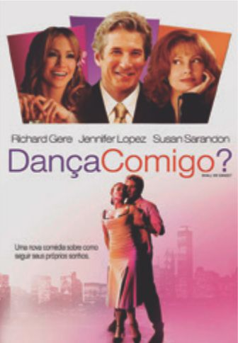
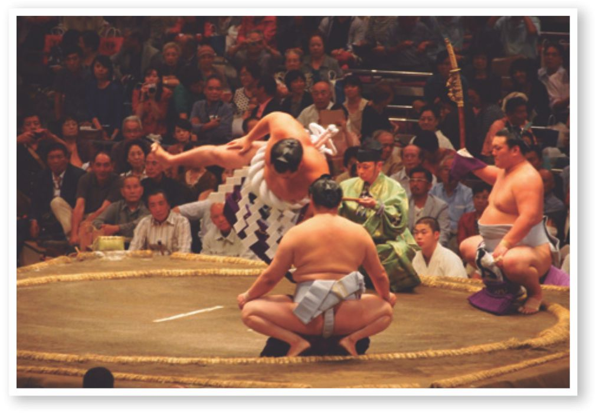

Orientações específicas
e propostas de atividades
8º ano
Iniciando a busca
Ao trabalhar com essa unidade temática, espera-se que os alunos desenvolvam as seguintes habilidades e competências:
- (EF89EF01) Experimentar diferentes papéis (jogador, árbitro e técnico) e fruir os esportes de rede/parede, campo e taco, invasão e combate, valorizando o trabalho coletivo e o protagonismo.
- (EF89EF02) Praticar um ou mais esportes de rede/parede, campo e taco, invasão e combate oferecidos pela escola, usando habilidades técnico-táticas básicas.
- (EF89EF03) Formular e utilizar estratégias para solucionar os desafios técnicos e táticos, tanto nos esportes de campo e taco, rede/parede, invasão e combate como nas modalidades esportivas escolhidas para praticar de forma específica.
- (EF89EF04) Identificar os elementos técnicos ou técnico-táticos indi- viduais, combinações táticas, sistemas de jogo e regras das modalidades esportivas praticadas, bem como diferenciar as modalidades esportivas com base nos critérios da lógica interna das categorias de esporte: rede/parede, campo e taco, invasão e combate.
- (EF89EF05) Identificar as transformações históricas do fenômeno esportivo e discutir alguns de seus problemas (doping, corrupção, violência etc.) e a forma como as mídias os apresentam.
- (EF89EF06) Verificar locais disponíveis na comunidade para a prática de esportes e das demais práticas corporais tematizadas na escola, propondo e produzindo alternativas para utilizá-los no tempo livre.
- Competências específicas: 1, 2, 6, 9, 10
- Competências gerais: 1, 2, 6, 8, 9, 10
- Competências de linguagens: 1, 2, 3, 4
Trabalhar com o esporte na escola é muito mais do que aperfeiçoar gestos técnicos, é dar tratamento “esportivo” a alguns temas da cultura corporal de movimento. É privilegiar o coletivo sobre o individual, compreendendo que o jogo não se faz sozinho, mas perante o outro, é preciso respeitar o colega e jogar “com” o companheiro é diferente de jogar “contra” o adversário.
Ao abordar o tema contemporâneo transversal dos direitos fundamentais, como o direito ao esporte, à educação, à cultura e ao lazer, tem como eixo central o desenvolvimento pessoal e social da criança e do adolescente. O Estatuto da Criança e do Adolescente, em seu artigo 71,
EDUCAÇÃO FÍSICA 18
reitera que “a criança e o adolescente têm direito a informação, cultura, lazer, esportes, diversões, espetáculos e produtos e serviços que respeitem sua condição peculiar de pessoa em desenvolvimento” (BRASIL, 1990).
Ressalte que no esporte existe a competição, mas o prazer, o coletivo, a cooperação e o respeito devem estar acima da lógica individualista egoísta e exacerbada, muitas vezes presente nos jogos. Como exemplo dos benefícios das práticas esportivas para a socialização, confira o caso bem-sucedido de uma escola que ofertou tais práticas aos alunos, descrito no texto a seguir.
Estudantes de SC aprendem a identificar e respeitar diferenças
No município catarinense de Videira, a Escola de Educação Básica Municipal Joaquim Amarante estimula as práticas esportivas entre os alunos. Os mais de 500 estudantes matriculados têm oportunidade de praticar basquete, vôlei, futsal, capoeira e tênis de mesa.
Peter Griffin/publicdomainpictures
Jogo de vôlei na escola, 2019.
“O esporte ajuda na interação e na sociabilidade entre os alunos e permite que conheçam e respeitem as diferenças e aprendam a importância do trabalho em equipe”, salienta a pedagoga Maria Lúcia Deluque Altenhofen, que dirige a escola há seis anos. “Os benefícios são físicos e psicológicos. Além de fortalecer ossos e músculos, a prática de esportes ajuda na concentração e na coordenação motora.”
Maria Lúcia acredita que o esporte amplia o conceito de coletivo e, consequentemente, auxilia na realização de trabalhos em equipe, estimula a competitividade e ensina o respeito às regras. Na visão da diretora, que está há 24 anos no magistério, a participação em competições e em outros eventos é essencial para que os estudantes, além de representar a instituição, interajam com outros grupos e, assim, ampliem a ideia de socialização e fortaleçam a de cooperação. “Com a participação dos alunos em competições, a escola visa sempre ao trabalho em equipe e ao desenvolvimento físico e psicológico”, explica.
De acordo com Maria Lúcia, até 2013, eram oferecidas atividades esportivas somente durante as aulas de Educação Física, com a realização, por voluntários, de projetos de basquete e de futsal, no contraturno. Com a adesão ao programa Mais Educação, a partir deste ano, a escola passou a oferecer oficinas que incluem atividades esportivas, pedagógicas e de lazer. A instituição aderiu também ao programa Atleta na Escola, com opção pelo vôlei.
Solidariedade – “O oferecimento de atividades esportivas pela escola possibilita aos alunos experimentar diferentes modalidades”, diz Sabrina do Amaral, professora de Educação Física. Segundo ela, a ênfase do esporte na escola não está no rendimento profissional, mas na parte lúdica e recreativa. Isso possibilita a crianças e adolescentes interagir, compartilhar momentos de socialização e cooperação e construir atitudes de respeito, companheirismo e solidariedade.
EDUCAÇÃO FÍSICA 19
Para a professora Dulcilene Araújo Marinho, que também leciona Educação Física, os alunos, com a prática de esportes, aprendem não apenas a competir: “Aprendem ainda que, para ser o primeiro, continuar nas competições e ter um bom rendimento, é preciso ter metas, responsabilidade, força de vontade e interesse”, destaca.
Este ano, a escola conquistou o primeiro lugar na competição de vôlei dos Jogos Intercolegiais e obteve o quarto lugar entre as escolas participantes dos Jogos Estaduais.
Os resultados observados com a prática de esportes pelos estudantes têm sido positivos. “É visível a mudança de comportamento e de atitudes, pois eles aprendem a respeitar regras e a trabalhar em equipe”, justifica Dulcilene.
SCHENINI, Fátima. Estudantes de SC aprendem a identificar e respeitar diferenças. Portal MEC.Disponível em: portal.mec.gov.br/component/tags/tag/33410-esporte-na-escola. Acesso em: 31 maio 2022.
O trabalho com os esportes na escola proporciona aos alunos, além da socialização, o senso de equipe, de cooperação e de responsabilidade. Comente com eles que o esporte serve para a melhoria da qualidade de vida, para o bem-estar, para a redução do estresse e melhoria geral da saúde. É uma forma de lazer, de inclusão e promoção social, de fuga da criminalidade, entre outros. Apresente à turma notícias, reportagens ou imagens que retratem esses aspectos do esporte.
É preciso, no entanto, levantar alguns de seus problemas, por meio de questões que deverão ser dialogadas, pesquisadas e debatidas, por exemplo, o esporte profissional, de competição ou de rendimento traz sérias consequências para a saúde, já que a sobrecarga de treinamentos provoca lesões, desgastes e violência, possibilita o uso de substâncias ilícitas (doping), causa traumas durante o jogo, levam a problemas de saúde mental, etc. Apresente notícias ou imagens de casos que já ocorreram.
Seguem algumas sugestões para subsídio ao trabalho com o tema.
- OLIVEIRA, José Eduardo Costa de. FERRIANE, Maria das Graças Carvalho. Esporte e violência. EFDeportes.com. Disponível em: https://cutt.ly/sKiEKM2. Acesso em: 17 jun. 2022.
- AS LESÕES mais comuns em atletas de alto rendimento. Revista Bicicleta, 20 fev. 2019. Disponível em: https://revistabicicleta.com/saude/as-lesoes-mais-comuns-em-atletas-de-alto-rendimento/. Acesso em: 1 jun. 2022.
- COSTA, Frederico Souza da et al. Doping no esporte: problematização ética. Revista Brasileira de Ciências do Esporte (RBCE), v. 27, n. 1, 2005. Disponível em: http://revista.cbce.org.br/index.php/RBCE/article/view/137. Acesso em: 1 jun. 2022.
- BERNARDO, André. O caso Simone Biles nas Olimpíadas e a saú- de mental no esporte. Veja Saúde. Disponível em: https://saude.abril.com.br/coluna/saude-e-pop/a-saida-de-simone-biles-das-o-limpiadas-e-a-saude-mental-no-esporte/. Acesso em: 17 jun. 2022.
EDUCAÇÃO FÍSICA 20
- SILVA, Isabella Nogueira; MARCELINO, Karen Rodrigues; GONZALEZ, Ricardo Hugo. O uso do doping no esporte: uma revisão de literatura. EFDeportes.com, Buenos Aires, ano 18, n. 180, maio 2013. Disponível em: https://efdeportes.com/efd180/o-uso-do-doping-no-esporte.htm. Acesso em: 10 jun. 2022.
Após conversarem sobre o tema, organize uma mesa redonda, que pode ser prestigiada pela comunidade escolar, na qual alguns alunos ficarão encarregados de abordar os problemas que o esporte pode trazer para as pessoas, utilizando argumentos coerentes, enquanto outros irão tratar dos benefícios do esporte, enfatizando argumentos aceitáveis.
Todos deverão pesquisar mais informações sobre o tema proposto. A pesquisa poderá ser realizada em grupos, na escola ou fora dela. Cada grupo deverá discutir os argumentos que irão utilizar na mesa redonda.
No dia da apresentação, você será o moderador, cuidando para que todos tenham momentos de fala com tempo semelhante, e para que a discussão não fuja do tema. Ao término, reúna os alunos para conversarem sobre as conclusões da mesa, a proposta didática apresentada e o envolvimento da turma durante o processo.
Os princípios do direito ao esporte educacional, seguro e inclusivo são os seguintes:
- Diversificar para incluir: todas as crianças e todos(as) os(as) adolescentes devem ter oportunidade de praticar esporte. Meninos e meninas jogam, brincam e se divertem juntos. Adaptações como campos e quadras pequenas, bolas mais leves, rede de vôlei mais baixa, aros de basquete de diversos tamanhos e alturas, traves menores são algumas ferramentas para tornar o jogo mais divertido, educacional, seguro e inclusivo.
- Diversificar para incluir: todas as crianças e todos(as) os(as) adolescentes devem ter oportuni- dade de praticar esporte. Meninos e meninas jogam, brincam e se divertem juntos. Adaptações como campos e quadras pequenas, bolas mais leves, rede de vôlei mais baixa, aros de basquete de diversos tamanhos e alturas, traves menores são algumas ferramentas para tornar o jogo mais divertido, educacional, seguro e inclusivo.
- Aprender sobre o outro: somos diferentes uns dos outros, mas todos e todas têm os mesmos direitos, que precisam ser respeitados. Aprendemos muito quando jogamos juntos e nos adaptamos para que todos(as) possam jogar.
- Liberdade com responsabilidade: jogar é aprender a fazer escolhas conjuntamente, o tempo todo: construir e decidir regras juntos, resolver conflitos pelo diálogo, cuidar do material, ocupar espaços dentro ou fora da escola, mobilizar a comunidade para manter o campo e a quadra bem cuidados. Esse é um exercício de conquista de autonomia em que se compreende que as escolhas interferem na vida de todas as pessoas.
- Educar de corpo inteiro: crianças e adolescentes não podem ser divididos em corpo e mente. O esporte contribui para articular habilidades motoras com pensamento e emoções.
EDUCAÇÃO FÍSICA 21
Corpo em ação
Esportes de rede/parede
São as modalidades esportivas em que se arremessa, lança, golpeia uma bola ou peteca sobre a rede ou contra uma parede, direcionando-a à quadra adversária. Também chamadas de esportes com rede divisória ou muro/parede de rebote, o intuito é fazer com que o oponente não tenha condições de devolvê-la, ou que seja induzido ao erro, devolvendo-a para fora dos limites válidos da quadra ou campo adversário.
As características desses esportes é que são jogados por meio de interceptações (defendendo) da trajetória do implemento (bola, disco, peteca, etc.), ao mesmo tempo em que procura jogá-lo para a quadra adversária (atacando).
Na maioria dos esportes de rede, o implemento é golpeado de maneira alternada e direta (sem pausas), sendo que, se o objeto tocar o chão, é considerado ponto. Podemos citar como exemplo o tênis, o tênis de mesa e o punhobol, em que o implemento pode tocar no chão ou na mesa, uma vez que, ainda assim, a jogada tem continuidade assegurada pela regra, configurando ponto ou finalização da jogada após o segundo toque seguido no chão ou na mesa.
Também pode ser feito de maneira alternada indireta (com defesa ou preparação), podendo existir toques defensivos ou preparatórios para atacar em boas condições. Ainda, para o posicionamento defensivo, deve-se ocupar bem os espaços antes de receber a bola para devolvê-la, de maneira que dificulte a ação defensiva e os contra-ataques dos adversários. São exemplos de esportes com rede divisória: futsac, voleibol, vôlei de praia, tênis, beach tennis, badminton, pádel, peteca e punhobol. São exemplos de esportes com parede de rebote: pelota basca, raquetebol, squash e wall handball.
Futsac
Jogos com bola estão presentes em praticamente todas as tradições. A Federação Internacional de Futebol (FIFA) reconhece o cuju, criado na China, como a forma mais antiga de se jogar futebol. Por influência desse jogo, surgiu o kemari, praticado no Japão, cujo objetivo era que as pessoas, em círculo, não deixassem a bola cair no chão. Ainda no continente asiático, na Malásia, por volta de 1940, foi elaborado uma forma de competição em que a bola é jogada por cima da rede, semelhante ao futevôlei, chamada
EDUCAÇÃO FÍSICA 22
Sepak Takraw. Apesar de ser desconhecido pela maioria dos brasileiros, é bastante praticado na Região Norte do país, especialmente no Pará.
O hacky sack, inventado nos EUA, em 1972, pelos amigos Mike Marshall e Joseph Stalberg, é um jogo que foi oficializado com o nome de footbag, no qual também consiste em evitar que a bola caia no chão e conta com uma federação internacional e uma associação brasileira que subsidiam esse esporte.
A partir do footbag, e reunindo também características de outros jogos, um pouco de filosofia e estilo brasileiro, é que surgiu o futsac, criado pelo curitibano Marcos Juliano Ofenbock, que o define como uma mistura de vários esportes, pois reúne o futevôlei com a agilidade do tênis.
História do esporte
[...] comecei a refletir que o futsac era o mais novo esporte criado no mundo no século XXI e tive curiosidade em pesquisar se existiam outros esportes que também tivessem sido inventados neste século e oficialmente reconhecidos.
Encontrei muitas modalidades criadas no século XXI, mas ainda não haviam sido totalmente organizadas, com ligas, federações, confederações nacionais, federações internacionais e muitos campeonatos realizados. Descobri três outros novos esportes também criados no Brasil e que estavam em fase de organização: o manbol, inventado no Pará por Rui Hildebrando, e que se encontrava bastante avançado; o batbol, inventado no Paraná por Marcos Bonatto; e um esporte marítimo, o shark paddle surf, inventado em Santa Catarina por Alexandre Mattei.
Descobri três esportes também inventados no século XXI e que já estavam bastante organizados. Dois eram de mesa: o headis, inventado no ano de 2006 na Alemanha, que misturava tênis de mesa com futebol; e o hantis, criado nos Estados Unidos em 2005, que misturava tênis de mesa com tênis, mas era jogado com a mão por quatro jogadores em quatro mesas simultâneas. Encontrei também o footgolf, inventado na Holanda em 2008, que era uma mistura de golfe e futebol.
Com essas novas informações, descobri que o futsac realmente era o primeiro esporte de quadra criado no mundo no século XXI. Fiquei mais feliz em perceber essa gigantesca conquista, pois um esporte oficialmente curitibano, paranaense e brasileiro tinha o mérito de ser o pioneiro em esportes praticados em quadra, no terceiro milênio, em todo o planeta.
OFENBOCK, Marcos Juliano. O nascimento de um esporte: como inventei um esporte no fundo de quintal. Curitiba: M. J. Ofenbock, 2016. p. 186-187.EDUCAÇÃO FÍSICA 23
Oficialmente, o futsac pode ser jogado individualmente ou em duplas e é praticado em uma quadra com 10 m de comprimento por 5 m de largura, dividida por uma rede com 1,5 m de altura, conforme ilustrado a seguir.
Mostre, por meio de vídeos, como se joga o futsac, pois muitos alunos não conhecem esse esporte. Sugestão: https://cutt.ly/nJ71HKA. Acesso em: 9 jun. 2022.
A bola pesa 50 g e mede 5 cm de altura por 6 cm de largura. É menor que uma bola de tênis e maior que uma de pingue-pongue.
Segundo a Confederação Brasileira de Futsac, em relação à contagem dos pontos, tem-se a seguinte orientação: são três sets de 21 pontos corridos e sem vantagem; na ocasião em que o set empatar em 20 a 20, este terminará somente quando um dos atletas ou equipe possuir dois pontos de vantagem em relação ao outro, estendendo-se até 29 a 29, e vence o set quem conquistar o 30.o ponto; a equipe ou o atleta que ganhar dois sets vence a partida. Esses pontos são computados por meio das marcas: bola dentro, bola fora e ponto cancelado. Cada atleta pode dar até dois toques consecutivos na bola; cinco toques por dupla, no total de três serviços.
 Partida de futsac. Curitiba, PR, 2016.
Partida de futsac. Curitiba, PR, 2016.
 Ataque sendo realizado após preparação da bola
por meio de uma levantada. Curitiba, PR, 2016.
Ataque sendo realizado após preparação da bola
por meio de uma levantada. Curitiba, PR, 2016.
EDUCAÇÃO FÍSICA 24
Organizando a atividade
Materiais necessários: postes para suporte de rede, rede ou uma corda
e bolinha de futsac (crochê).
Número de aulas estimado: 3
Objetivo: praticar o esporte de rede futsac, formulando e usando
estratégias para solucionar os desafios técnico-táticos básicos.
Para praticar o futsac é só escolher a modalidade, dupla ou individual, fazer a divisão, o sorteio e selecionar quem inicia a partida, sacando ou recebendo.
O sacador deverá soltar a bola e golpear com o pé, fazendo com que ela passe diretamente para a quadra adversária, no quadrante oposto ao qual está sacando (cruzado), onde o recebedor – no caso do jogo individual – deverá obrigatoriamente executar dois toques (preparando e atacando) para realizar a devolução. Se o jogo for em duplas, pode ser executada a devolução em apenas um toque.
A bola pode ser tocada com qualquer parte do corpo (exceto membros superiores) durante a disputa do ponto. Ganha o ponto aquele que conseguir fazer a bola tocar no solo da quadra adversária, dentro de seus limites.
Como na escola se faz necessário abranger todos os alunos no máximo de tempo possível, mesmo mantendo poucos alunos em quadra, podemos criar uma maior rotatividade entre eles, de maneira que o jogo seja simplificado para apenas um set, o qual deverá ser mais curto, com até 11 pontos, por exemplo.
Nesse momento, verifique a disponibilidade de tempo com a demanda de alunos para fazer o melhor esquema de pontuação que achar necessário.
EDUCAÇÃO FÍSICA 25
Beach tennis
O beach tennis, ou tênis de praia, é muito praticado em vários países do mundo. O esporte, que mistura as regras de tênis de quadra com as do vôlei de praia, originou-se na Itália, na década de 1980, e é jogado em campo de areia fina, cujas medidas constam na seguinte ilustração.
As partidas simples são disputadas em melhor de 6 games e as de duplas, em melhor de 9 games, com diferença de 2 games, com o objetivo de devolver a bola recebida para o campo adversário por meio de voleios – que é o ato de tocar a bola com a raquete, sem deixá-la tocar o chão.
Para saber mais informações sobre o beach tennis, acesse os sites da Confederação Brasileira de Tênis e da Federação Internacional de Tênis, disponíveis em: https://tinyurl.com/y7vejxv5 e https://cutt.ly/GJn17Hq
Você pode visualizar uma aula sobre esse esporte no Portal do Professor, acessando: https://tinyurl.com/y9pkxkan.
Acessos em: 1 jun. 2022.A contagem de pontos é feita da mesma forma que no tênis de quadra: quando a bola toca o chão, vai para fora da quadra ou fica na rede. Pontuação essa que se configura da seguinte forma: 15, 30, 40 e o game, ou seja, 1 ponto = 15; 2 pontos = 30; 3 pontos = 40; 4 pontos = game. Entretanto, quando a partida está em 40 x 40 não existe vantagem para nenhuma equipe ou jogador. Ganha o jogo quem marcar o ponto subsequente ao 40.
No Brasil, o beach tennis é bastante praticado em várias cidades, mesmo nas que não têm praia, pois a quadra é montada em áreas semelhantes ou adaptadas, onde, inclusive, são realizadas competições de médio e grande porte. Joana Cortez é uma das atletas que inaugurou esse esporte no país. A tenista é bicampeã pan-americana.
EDUCAÇÃO FÍSICA 26
Organizando a atividade
Materiais necessários: raquetes simples de frescobol e bolinha de
tênis laranja, destinada para iniciação.
Número de aulas estimado: 4
Objetivo: praticar o esporte de rede beach tennis ou tênis de praia, formulando e usando estratégias para solucionar os desafios técnico-táticos básicos.
Na maior parte das vezes, o jogo é disputado em duplas, podendo haver a variação para a forma individual. Para tanto, se faz necessário ajustar as medidas da quadra, conforme já citado anteriormente. Apesar de ser um esporte para jogar na areia, como o próprio nome sugere, nada impede de serem feitas adaptações que mudam sutilmente a dinâmica do jogo, porém, não perdendo as características principais e determinantes dele.
Uma forma interessante de começar a aula é apresentando a atividade da maneira mais convencional, explicando um pouco sobre o esporte, como segurar a raquete, posicionar o corpo, bater na bola, etc. Para que exista um controle inicial sobre a técnica e a fluência da atividade, participe da atividade, ficando de um lado da quadra e controlando a bola vinda dos alunos.
Divida a turma em duas fileiras, sendo que o primeiro de cada fileira estará com a raquete na mão, enquanto você estará do outro lado da rede, seguindo a dinâmica de ir controlando a bola alternadamente para os dois alunos que estão à frente da fila e com a raquete na mão. Quando o primeiro aluno errar, este passa a raquete para o próximo colega, que passará a bater alternadamente com você.
Quem for errando, além de passar a raquete para o próximo colega, posiciona-se ao final da fila, aguardando outra oportunidade para bater a bola.
Observe a imagem a seguir, que mostra a adaptação de uma quadra poliesportiva para que alunos possam conhecer e praticar o beach tennis mesmo de forma adaptada. O jogo está sendo realizado em duplas, com jogadores guardando posicionamento próximos à rede, onde tem a maior incidência de bolas durante uma partida.
EDUCAÇÃO FÍSICA 27
A escolha dos lados e a escolha para ser sacador ou recebedor será decidida por sorteio. O jogo começa com um saque, que é efetuado atrás da linha de fundo, podendo ser por cima ou por baixo. Dessa maneira, os alunos passam a trocar as bolas em busca da melhor estratégia para ganhar o ponto.
Conforme já mencionado, as partidas geralmente são disputadas em 6 games, mas é possível variar conforme a disponibilidade de tempo e número de participantes. Nos jogos da categoria mista (uma menina e um menino na mesma equipe), o jogador masculino é obrigado a sacar por baixo. Não é permitido o jogador entrar no campo ou mesmo pisar levemente na linha antes de bater na bola. Se o saque tocar na rede, a jogada terá continuidade, sem que haja a repetição no ponto.
Os jogadores devem trocar de lado ao final de cada game. Antes, porém, uma observação importante: nas trocas de lado, ao final de cada game e nos pontos conquistados pelos oponentes, você deve incentivar que um cumprimento seja executado como forma de reconhecimento e cordialidade, demonstrando lealdade e companheirismo, apesar de serem adversários em quadra.
Tênis de mesa/pingue-pongue
O tênis de mesa originou-se na Inglaterra, no século XIX. Foi inicialmente praticado em ambientes fechados com o objetivo de manter as mesmas características do jogo de tênis de campo, porém fugindo do frio intenso e das variações climáticas que interferiam na prática como vento, neve, sol intenso, entre outras.
O jogo começou a ser desenvolvido com materiais improvisados que faziam parte do dia a dia das pessoas, como a rede feita com livros apoiados sobre a mesa, a bolinha confeccionada com rolha de cortiça e até mesmo caixas de charutos eram usadas como raquete.
É importante destacar que a Federação Internacional de Tênis de Mesa, criada em 1926, estabeleceu regras específicas para esse esporte. O pingue-pongue, por sua vez, apesar das semelhanças, só pode ser considerado um jogo recreativo, que utiliza raquetes e regras mais flexíveis para a prática.
Ao perceberem que era um esporte que surgiu para ficar, as empresas de brinquedos começaram a desenvolver materiais simples, porém direcionados para a prática do pingue-pongue. As raquetes passaram a ser fabricadas em madeira, emitindo um barulho estridente característico da bolinha batendo na raquete, o que deu origem ao nome pingue-pongue. Com a evolução do esporte, as raquetes passaram a ter borrachas protetoras, amenizando o ruído, tornando mais macia a batida e aumentando o controle. Para complementar essa evolução de um dos esportes mais
EDUCAÇÃO FÍSICA 28
populares do mundo, algumas mudanças se fizeram necessárias: a bolinha começou a ser fabricada de celuloide e aumentou de tamanho, no início a medida era de 38 mm, depois foi para 40 mm, visando aumentar a resistência ao ar e, tornando o jogo mais lento. Dessa forma, o tempo de bola em jogo passou a ser maior e os rally’s mais emocionantes.
Com a criação das entidades reguladoras da modalidade, surgem as regras oficiais, definindo que uma partida deve ser disputada como melhor de cinco sets. Também ficou estabelecido que um set é finalizado quando um dos atletas ou duplas chegar em 11 pontos. No caso de empate em 10 pontos, vence quem abrir dois pontos de vantagem em relação ao adversário. A cada dois pontos disputados, troca-se o sacador e, em caso de duplas, cada atleta da dupla saca uma vez.
O saque será válido somente se a bola for golpeada no máximo a 16cm de altura em relação à mesa, devendo quicar no lado do sacador e, em seguida, no lado do recebedor. Então, a troca é iniciada.
A pontuação é obtida nas seguintes situações: a) no momento em que a bola bater duas vezes na mesa; b) tocar a rede de forma que a jogada não tenha sequência; c) tocar a mesa e o adversário não consiga devolvê-la; ou que a devolução ou o saque vá diretamente para fora da mesa.
O saque não precisa ser cruzado nas partidas simples, porém, nas partidas em duplas, sempre deve ser executado cruzando no lado direito da mesa. A mesa oficial de tênis de mesa é feita com o tampo em madeira e suas medidas padrão estão especificadas na ilustração a seguir.
EDUCAÇÃO FÍSICA 29
Organizando a atividade
Materiais necessários: mesa, 4 raquetes, 4 bolinhas (de boa qualidade para manter a trajetória linear) e rede de pingue-pongue.
Número de aulas estimado: 3
Objetivo: praticar o esporte de rede tênis de mesa, formulando e usando estratégias para solucionar os desafios técnico-táticos básicos.

Comece explicando para os alunos a respeito das empunhaduras/ pegadas existentes, como a clássica (que se assemelha a um aperto de mão ou uma pegada em um cabo de martelo com o dedo indicador estendido para dar apoio na parte inferior da raquete), caneta e classineta (as quais se assemelham muito entre si, mudando a posição e movimentação dos dedos para apoiar e rotacionar no momento dos golpes na parte de trás da raquete). Exponha também quais os benefícios e as dificuldades de cada uma delas. Em seguida, verifique qual a preferência de cada aluno para que se sinta confortável e possa se manter ágil para executar as jogadas. O próximo passo é ensinar o significado e como se executa o forehand, backhand e o saque.
Forehand (dianteiro): é o golpe mais usado em um jogo, em que o jogador tem mais segurança e coordenação. O contato com a bola é realizado à frente e ao lado do corpo (para os destros, ao lado direito e para os canhotos, ao lado esquerdo), sendo que a palma da mão deve estar atrás da raquete e virada para seu adversário.
Backhand (golpe com as costas da mão): é um golpe que não produz tanta força, porém, muito importante para defender e preparar as jogadas para reverter situações adversas e chegar às finalizações dominando o ponto. O contato com a bola é realizado à frente e ao lado do corpo (para os destros, ao lado esquerdo e para os canhotos, ao lado direito). É importante registrar que o dorso da mão deve estar apontando para seu adversário e a mão à frente da raquete.
Saque: é o fundamento usado para dar início ao jogo sempre que se inicia um novo ponto. A bola deve estar aparente na palma da mão do sacador e o lançamento deve ser executado acima de 16 cm de altura em relação à mesa, evitando, assim, que o jogador esconda a sua intenção e não saque de forma que venha a iludir o adversário. O saque, obrigatoriamente, deve tocar no lado da mesa do sacador para posteriormente tocar na mesa do lado do recebedor. Em um jogo simples não há a necessidade de cruzar o saque, mas nos jogos em duplas deve-se cruzar o saque, que será executado ao lado direito da mesa.
EDUCAÇÃO FÍSICA 30
Incentive os alunos a aquecer trocando a bola calmamente com a intenção de controlá-la, sentindo o peso do objeto e encontrando os tempos de reação, de entrada e do ponto de contato, focando apenas em repetições de forehand, por exemplo. Em seguida, instrua-os a fazer o mesmo com o backhand, para que tenham um domínio mais apurado dos dois lados com os golpes mais básicos e usuais durante uma partida. Para dar início a esse treinamento de golpes de direita e de esquerda, pode ser acrescentado o saque de forma cadenciada, cujo objetivo não é definir o ponto, mas dar condições de executar várias repetições para fixação dos golpes de direita e de esquerda.
Enfim, é chegado o tão esperado momento do jogo, em que um jogador irá escolher entre as opções de sacar ou receber, por meio de sorteio. Para isso, podemos usar as próprias raquetes, que em geral têm as duas faces diferentes (de um lado borracha vermelha e de outro, preta). Um dos alunos escolhe a cor e, em seguida, a raquete é girada com velocidade sobre a mesa. A cor que cair com a face para cima determinará o jogador que irá decidir se quer iniciar sacando ou recebendo e o lado da mesa que prefere iniciar a partida.
É importante lembrar que cada jogador saca duas vezes, independentemente de vencer ou perder o ponto. Por se tratar de âmbito escolar, em que há um volume grande de alunos, acaba se tornando inviável manter as regras oficiais de disputa, sendo melhor de 5 sets até 11 pontos cada um.
Nesse momento, adapte as regras e promova modificações que possam oportunizar a participação de todos da turma, seja deixando cada aluno jogar apenas 1 set, diminuindo a pontuação do set para que as trocas aconteçam com maior dinamismo. Essas medidas permitem com que todos possam jogar diversas vezes e, de preferência, com parceiros diferentes, pois essa diversidade de habilidades e estilos diferentes só enriquecem o acervo motor dos alunos.
A sua participação e envolvimento com os alunos nos aprendizados, treinamentos e jogos é uma das maiores motivações para que a turma se dedique e tenha objetivos cada vez mais motivadores e incentivadores por meio do modelo que você apresenta a eles. Portanto, divirtam-se juntos.
Voleibol
Criado pelo estadunidense William G. Morgan, em 1895, com o objetivo de ser um esporte em equipe e sem contato físico, a fim de evitar lesões, utilizava como bola a câmera de ar da bola de basquetebol, o qual já existia desde 1891 e era bastante praticado nessa época.
A ideia do jogo era que os participantes jogassem a bola com as mãos, de um lado para outro, sobre a rede. Portanto, a bola deveria ser leve. As medidas da quadra também eram menores que as de hoje. Com o passar do tempo, o voleibol foi se difundindo e crescendo no cenário mundial, até que, em 1947, foi criada a Federação Internacional de Voleibol (FIBV). Em 1964, foi incluído nos jogos da 18.a Olimpíada, em Tóquio, no Japão.
EDUCAÇÃO FÍSICA 31
Em uma partida, cada jogada se inicia com um saque, que fará a bola passar por cima da rede, com o objetivo de atingir o solo da quadra adversária. Havendo defesa, prossegue o rally até que a bola caia no chão da quadra ou que vá para fora dela. O time que vencer o rally de cada jogada marca um ponto, ganha a posse de bola e faz o rodízio das posições (se estiver com a posse de bola, permanece com ela e mantém as posições).
Pietro
As regras básicas do voleibol são as seguintes:
Duas equipes – Cada uma formada por doze jogadores (seis em campo e seis reservas), em uma quadra retangular dividida por uma rede, conforme as especificações nas ilustrações anteriores.
Pontuação – O time que marcar 25 pontos, com uma diferença de 2 pontos em relação ao outro, vence o set, que é cada parte em que se divide o jogo. Caso empate em 24 a 24, o jogo continua até que uma das equipes obtenha dois pontos de diferença. Para ganhar a partida, a equipe precisa vencer três sets. Ainda, se empatados os sets em 2 a 2, será disputado o tiebreake (ou set de desempate) de 15 pontos corridos.
EDUCAÇÃO FÍSICA 32
Rodízio – Quando a equipe que receber a bola ganhar o rally, esta tem direito à posse de bola e, consequentemente, a efetuar o saque. Para tanto, deverá fazer o rodízio de uma posição, conforme a ilustração anterior.
- A zona de ataque ou “rede” é composta por três jogadores, os quais ficam dispostos nas posições 4, 3 e 2 (rede esquerda ou ponta, central e direita, ou saída de rede, respectivamente).
- Na linha de defesa, ou fundo de quadra, estarão os jogadores dispostos nas posições 5, 6 e 1 (fundo esquerda, central e direita).
Toques – Cada equipe pode dar no máximo 3 toques na bola antes de passá-la para o campo adversário. Ultrapassados esses toques, será considerado falta, assim como um mesmo jogador não pode dar dois toques seguidos na bola.
Os fundamentos técnicos do voleibol, são os seguintes:
Saque – Dá início ao jogo e também é considerado um fundamento de ataque. Após efetuado o saque, os jogadores ficam livres para se moverem pela quadra, e para que a bola passe por cima da rede, rumo à quadra da equipe adversária, existem diferentes tipos de saque:
-
Saque por cima – Esse saque faz com que a bola tenha uma tra- jetória flutuante. O jogador precisa segurar a bola com uma ou as duas mãos, jogar a bola para o alto, sobre a cabeça, e bater nela com a palma da mão.

-
Saque por baixo – O jogador deve segurar a bola na altura da cin- tura com uma das mãos e com a outra, fechada e com o polegar para fora, bater na parte inferior da bola.
EDUCAÇÃO FÍSICA 33
- Saque “Jornada nas Estrelas” – É outro tipo de saque por baixo e utilizado em competições oficiais. Criado pelo jogador brasileiro Bernard Rajzman, membro do Comitê Olímpico Internacional (COI). A bola sobe a uma altura de 25 metros, o que equivale a oito andares de um prédio, e desce em alta velocidade.
- Saque em suspensão, ou “viagem” – É um saque rápido e ofensivo, semelhante a uma cortada. Para executá-lo, o jogador fica a alguns passos da linha de fundo da quadra, joga a bola bem alto, a tempo de correr, saltar e bater nela com a palma da mão, o mais forte possível.
Recepção – É o primeiro dos três toques a ser executado pela equipe. Quem recebe o saque, passa a bola para o levantador. A forma mais comum de recepção é a manchete, em que a bola toca nos antebraços do jogador.
EDUCAÇÃO FÍSICA 34
Levantamento – Geralmente é feito no segundo toque, após da recepção. Embora possa ser feito por manchete, a forma mais comum é pelo toque. O objetivo desse fundamento é que a bola seja levantada o mais próximo da rede (ou da linha dos 3 metros), para que um jogador realize o ataque, buscando marcar ponto.
Ataque – Trata-se, comumente, do terceiro toque na bola realizado por cada equipe, feito por meio da cortada, em que o jogador salta e bate na bola o mais forte possível, direcionando-a para baixo. Existe também a largada, que é outra forma de ataque, na qual não se emprega força. Nesse fundamento, o jogador, em vez de realizar a cortada, tenta “colocar” a bola no chão da quadra adversária com um toque nas pontas dos dedos, desviando do bloqueio.
Bloqueio – É um meio de defesa que consiste em bloquear o ataque, com o objetivo de impedir que a bola passe para a sua quadra, devolvendo-a ao campo adversário. Pode ser individual, duplo ou triplo (feito, respectivamente, por um, dois e três jogadores).
EDUCAÇÃO FÍSICA 35
Defesa – Tem por objetivo impedir que a equipe adversária pontue após efetuar o ataque (seja por cortada ou largada). Também é o primeiro toque da equipe que irá contra-atacar. Pode ser feita com qualquer parte do corpo, até mesmo com os pés. Devido à importância desse fundamento, há um jogador específico para essa função, o líbero.
Organizando a atividade
Materiais necessários: bola de voleibol, rede de voleibol e postes (suporte de rede).
Número de aulas estimado: 8 a 10.
Objetivo: experimentar o voleibol e suas variações, usando habilida- des técnico-táticas básicas e, identificando sistemas de jogo e regras; compreender, com base nos critérios da lógica interna das categorias de esporte, o voleibol como um esporte de rede.
Assim como no surgimento do voleibol, também podemos adaptar os materiais e a quadra de jogo. Atualmente, esse esporte tomou uma grande dimensão que praticamente não se faz necessário adaptações. Praticamente todas as escolas, centros esportivos e locais destinados às práticas esportivas possuem uma quadra de voleibol com estrutura para armar uma rede e colocar uma bola em jogo, dando vida à modalidade tão popular em todos os cantos do planeta.
Comece a atividade com o voleibol tradicional, formando duas equipes com seis alunos. Se achar necessário, esse número pode variar para mais ou para menos, de acordo com a quantidade de alunos.
O próximo passo será definir a pontuação e o número de sets para o término da partida. As adaptações podem ser feitas de diversas maneiras como na forma de pontuar, no número de toques máximo e mínimo, ou na obrigatoriedade de serem cumpridas determinadas situações como:
- Dentro dos três toques, a mesma pessoa não pode tocar a bola duas vezes, ainda que de forma alternada;
- Para recepcionar um saque, o primeiro toque deve ser, obrigatoria- mente, uma manchete;
- O segundo contato com a bola ou preparação deve ser um toque;
- A bola não pode ser quicada antes da linha dos três metros.
EDUCAÇÃO FÍSICA 36
É possível também cobrir a rede com papel Kraft, por exemplo, ou mesmo com pedaços de pano para realizar o vôlei cego, não permitindo que os alunos enxerguem o outro lado da rede. Desse modo, cada jogada configura-se uma surpresa, à medida que se trabalha em grande nível a atenção para além da compreensão do jogo.
Ainda, você pode utilizar como recurso duas redes armadas, configurando um “X”, para que formem quatro pequenas quadras definidas. Divida a turma em quatro equipes, que jogam entre si, posicionando-as dentro das quadras.
Para ambas as atividades, a atenção e a agilidade dos alunos são trabalhadas, pois eles não terão uma previsão para onde a bola será jogada. Posteriormente, sacará a equipe que vencer o último rally disputado.
Voleibol Sentado
O Vôlei Sentado foi criado em 1956, a partir da união de um esporte sem rede chamado sitzbal, praticado na Alemanha por pessoas com pouca mobilidade com o vôlei convencional, cujas regras foram adaptadas.
Foi disputado oficialmente em 1980, nas Paraolimpíadas de Arnhem, na Holanda. No entanto, a partir de 2004, em Atenas, essa modalidade passou a ser disputada somente com jogadores sentados.
EDUCAÇÃO FÍSICA 37
Os atletas que disputam o Voleibol Sentado são portadores de diversos tipos de deficiência locomotora como amputações, lesões na coluna vertebral e paralisia cerebral.
Essa modalidade possui um sistema de classificação funcional que a divide entre amputados e les autres. Há nove classes básicas para os amputados — com amputações simples ou combinadas de membros inferiores e superiores. Classificam-se como les autres atletas com alguma deficiência locomotora.
O esquema a seguir resume tudo o que é necessário para organizar e colocar em prática um jogo de Vôlei Sentado, ou seja, as medidas, o posicionamento, a pontuação e as classificações.
EDUCAÇÃO FÍSICA 38
Organizando a atividade
Materiais necessários: bola de voleibol, rede de voleibol baixa e postes (suporte de rede).
Número de aulas estimado: 3
Objetivo: experimentar o Voleibol Sentado usando habilidades técnico-táticas básicas, identificando sistemas de jogo e regras, reconhe- cendo-o como modalidade paralímpica.
Para fazer a diferença na vida de muitos alunos com necessidades especiais e, na mesma oportunidade, inserir vários outros alunos que podem ser levados a refletir sobre as limitações e, consequentemente, ter uma importante mudança de conceitos, basta tomar uma atitude muito simples. Baixe a rede de voleibol e peça a todos os alunos que se sentem no chão e deem o seu máximo, fazendo algo muito difícil, que é praticar com excelência um esporte tão técnico e preciso, trabalhando o tema contemporâneo transversal de inclusão.
Observe a quadra de jogo do Vôlei Sentado, com as medidas oficiais e uma prévia do posicionamento dos jogadores, representada a seguir.

Avaliando
Avalie o interesse dos alunos em experimentar esportes desconhecidos, enriquecendo seus acervos culturais. Observe também se procuraram aperfeiçoar técnicas específicas dos esportes de rede e parede, colaborando com o colega da dupla ou com a equipe nos esportes coletivos, percebendo a importância de cada um para o bem comum.
Para um trabalho final com esses esportes, forme equipes para uma vivência prática. Essa montagem e configuração das equipes deve ser feita com os alunos, que devem chegar a um consenso sobre a melhor formação e aproveitamento de cada um na equipe, respeitando suas características pessoais. Eles deverão vivenciar todas as posições. Após os jogos, em uma roda de conversa, colete o relato deles sobre as dificuldades e facilidades de cada posição e, com base nos resultados, procure designar posições específicas para cada um, levando em conta as suas habilidades e preferências, pois se espera que as compreensões técnicas tenham ocorrido.
EDUCAÇÃO FÍSICA 39
Corpo em Ação
Esportes de campo e taco
São as modalidades cujo objetivo é rebater a bola arremessada à distância mais longa possível, tentando percorrer todas ou o maior número de bases para somar pontos. As equipes se alternam atacando e defendendo, ou seja, cada equipe tem a sua vez de atacar e de defender. Um ataque terá início quando um rebatedor acertar com um taco (ou outro instrumento similar) a bola arremessada pelo jogador adversário, tentando mandá-la o mais longe possível, mantendo dentro do campo de jogo, atrasando a devolução da mesma pelos defensores, iniciando assim a corrida para percorrer a distância necessária para marcar os pontos.
Um dos esportes dessa categoria é o golfe. Provavelmente os alunos o conheçam de filmes ou programas de TV, pois não é uma modalidade muito acessível no Brasil. Como forma de possibilitar a experimentação na escola, será explorado o esporte minigolfe, que não exige um campo extenso para ser praticado.
Minigolfe
O minigolfe é a redução em grande escala do esporte que tem grandes dimensões territoriais, conhecido como o tradicional golfe. O enorme campo utilizado para jogar passa a dar espaço a uma área consideravelmente menor. Na ocasião do surgimento do golfe, a sociedade não considerava aceitável o grande número de mulheres praticando um esporte que utilizava tacadas com considerável vigor e movimentos bruscos publicamente, sendo assim, essas mulheres eram privadas de jogar e principalmente de mostrar que eram tão habilidosas quanto os homens.
felix_w
Jogo de minigolfe, 2018.
EDUCAÇÃO FÍSICA 40
Dessa forma, surgiu a necessidade da elaboração de um campo pequeno que tivesse 18 buracos, para que as mulheres, utilizando-se de um taco mais curto, pudessem jogar com movimentos mais contidos e ainda conseguissem manter a classe e a elegância, já que o campo extremamente reduzido não demandava tanta força para superar um décimo da escala total de um campo tradicional.
Assim como no golfe tradicional, o circuito do minigolfe é composto por 18 greens (buracos) e o objetivo é cumprir o circuito no menor número possível de tacadas. Não existe um tempo estimado e predeterminado para o final do jogo, que termina no mesmo momento que um dos jogadores consegue cumprir todo o circuito ao acertar a bola no 18.o green.
Para conduzir melhor suas explicações, consulte o glossário do golfe, disponível em: https://tinyurl.com/y6wldgnc, e outras características do minigolfe em: https://tinyurl.com/yafosuuz. Acesso em: 1 jun. 2022.
Organizando a atividade
Materiais necessários: bola de golfe, de tênis ou de borracha, dois tacos de betes e cones chineses para configurar um green (buraco).
Número de aulas estimado: 2
Objetivo: praticar o esporte de campo e taco minigolfe, formulando e usando estratégias para solucionar os desafios técnico-táticos básicos.
Encontre a área em que será confeccionado o campo. O primeiro passo é organizar a distribuição dos greens para que não fiquem muito próximos uns aos outros e o circuito se torne diversificado, a fim de que a dificuldade se eleve de forma gradativa. Para isso, devem ser colocados obstáculos que comprometem a passagem da bola, desde o momento em que sai do tee, a partir da primeira tacada, tornando o jogo mais complexo.
A atividade pode ser realizada individualmente ou em grupo. Quando individual, os alunos irão se alternando para completar cada green, podendo utilizar um número ilimitado de tentativas, até que consiga completar com a bola dentro do green. Quem completar o primeiro green já pode partir para o segundo, enquanto aquele que não conseguir ainda permanece tentando finalizar, e assim sucessivamente, até que seja concluído o circuito com os 18 greens.
Quando o jogo é em equipes, como sugestão pode ser feito o revezamento dos alunos. Então, cada um realiza uma tacada, independentemente de errar ou acertar, sempre mantendo uma sequência entre os jogadores para que todos joguem de maneira uniforme, contribuindo para a evolução na preparação de melhores condições de acertar a bola nos 18 greens, finalizando e vencendo a partida.
A ilustração a seguir mostra um campo de minigolfe com obstáculos variados.
EDUCAÇÃO FÍSICA 41
As principais técnicas básicas herdadas do golfe tradicional devem ser mantidas, para facilitar as execuções que demandam grande habilidade e preparação dos mínimos detalhes. Isso é importante para que a bola seja direcionada aos greens após uma tacada de qualidade. Para isso, o aluno deve se posicionar ao lado da bola, com os pés ligeiramente afastados (aproximadamente na largura dos ombros), joelhos com levíssima flexão, para mantê-los soltos, preparação do taco realizando o balanceio totalmente na vertical (para baixo) e atrás da bola, terminação para frente e não tão alta, deixando o taco fluir livremente após o contato com a bola.
Avaliando
Por meio da observação direta, avalie se os alunos conseguiram desenvolver as habilidades técnico-táticas presentes no minigolfe, como agilidade e força ao bater na bolinha e a precisão ao jogá-la para acertar o alvo. Observe também a motivação dos alunos em realizar as atividades práticas e o comportamento deles em relação aos colegas, com respeito.
Corpo em Ação
Esportes de invasão
São esportes cujo objetivo é a tomada de território, setor da quadra ou campo, conduzindo um objeto (geralmente, uma bola), superando a defesa adversária, ao mesmo tempo em que se defende o próprio campo, impedindo o adversário de marcar pontos. São exemplos de esportes de invasão: handebol, basquetebol, futebol americano, ultimate frisbee, futsal, tchoukball e flag football.
EDUCAÇÃO FÍSICA 42
É possível que os alunos não conheçam o flag football, um esporte diferente, que pode ser praticado em vários espaços. Para tanto, você pode utilizar o laboratório de informática ou outros recursos midiáticos para acessar o vídeo disponível em: https://flagfootball.com.br/ e mostrar as regras e os atrativos desse esporte para a turma. Na sequência, converse com a turma a respeito de como poderiam praticar esse esporte na escola.
Flag football
O objetivo da criação do flag football, um futebol jogado com as mãos, foi de torná-lo um instrumento pedagógico para ensinar as regras e os princípios do futebol americano aos jovens. Trata-se de um esporte cuja versão é mais simples que o football, ou seja, o futebol americano, no qual as regras são baseadas, conforme a International Federation American Football. Entretanto, as adaptações feitas o mantiveram curto e simples.
Disputado em duas equipes de 11 jogadores cada, o futebol americano tem como objetivo fazer com que o jogador leve a bola oval, por meio de corrida ou passe aéreo, até invadir e dominar o campo adversário, na área de pontuação. A defesa do time tenta impedir, por meio de contato físico, a marcação do touchdown (pouso, aterrissagem), que é o momento em que o time consegue adentrar o endzone (área de marcação de ponto) da equipe adversária, obtendo seis pontos ou mais.
Já no flag football, a defesa tenta remover uma ou mais fitas (flags) que estão presas na cintura de quem está na posse de bola, sem que haja qualquer contato físico, o que evita eventuais lesões.
Esse jogo permite o desenvolvimento de atividades como correr, lançar e saltar. É uma ferramenta ideal para se trabalhar a coordenação motora, ritmo, equilíbrio, percepções de tempo e espaço, além de promover o convívio social e estimular uma forma saudável de competição entre as equipes, que têm de quatro a nove jogadores.
EDUCAÇÃO FÍSICA 43
Jarda é uma unidade de medida do Sistema Internacional de Unidades bastante utilizada nos Estados Unidos. Como o flag football tem origem estadunidense, devemos adaptar a jarda para metro, unidade aplicada em nosso país, em que 1 jarda = 0,9144 m. Você pode acessar, por exemplo, o endereço: http://conversordemedidas.info/ para converter as diversas unidades de medida.
O campo deve ser montado em uma área retangular, com as linhas e as dimensões oficiais: 70 jardas de comprimento (64,05 m) por 25 jardas de largura (22,9 m). Portanto, o espaço total necessário para um campo, incluindo área de segurança, é de (69,55 m) x (28,40 m), conforme indicado na ilustração a seguir.
Funciomanento do jogo:
- Cada partida é dividida em quatro tempos, chamados de quarto, e com duração de 10 minutos corridos.
- Um dos dois que vencer o cara ou coroa, ou outra forma de sorteio, realiza o kickoff (chute para o alto, pontapé inicial) ou escolhe o lado do campo em que irá começar recebendo. No começo do terceiro quarto, o time que começou recebendo a bola irá chutá-la para recomeçar o jogo.
- Após o fim de cada quarto, os times se mantêm do mesmo lado do campo.
- Entre o segundo e o terceiro quarto, haverá um intervalo obrigatório de 10 minutos, juntamente com a troca de lados.
Pontuação:
- Touchdown: seis pontos.
- Após o touchdown, o time que o marcou tem o direito de tentar marcar ponto extra.
- Conversão de ponto extra para 1:1 ponto (se o chute for realizado à distância de 5 jardas, ou 4,7 m).
- Conversão de ponto extra para 2:2 pontos (se o chute for realizado à distância de 12 jardas, ou 10,9 m).
- Safety (segurança): dois pontos. É o único caso em que se pode pontuar sem a bola. Ocorre quando alguém da defesa realiza um tackle, ou seja, detém um adversário que está com a posse da bola e em sua própria endzone.
- Retorno extra: 2 pontos (ao bloquear uma tentativa de ponto extra, voltando para a tentativa do touchdown).
EDUCAÇÃO FÍSICA 44
Organizando a atividade
Materiais necessários: bola de futebol americano ou rúgbi, bola de futebol murcha, coletes, tiras ou fitas de tecido, papel Kraft e sacolas.
Número de aulas estimado: 3
Objetivo: experimentar o esporte flag football, usando habilidades técnico-táticas básicas e identificando sistemas de jogo e regras; compreender, com base nos critérios da lógica interna das categorias de esporte, o flag football como um esporte de invasão.
Por se tratar de um jogo complexo, precisará ser adaptado e simplificado para sua utilização no ambiente escolar, visando oportunizar a todos os alunos a compreensão e o prazer de tentar e obter sucesso nesse esporte.
Se a turma não for muito numerosa, organize-a em apenas dois grupos, para que ninguém precise ficar esperando, sem jogar. Utilize os materiais indicados ou qualquer outro objeto flexível que possa ser preso na linha de cintura de cada aluno.
Para iniciar o jogo, posicione a bola alguns passos à frente da endzone, próximo da linha de touchdown do time que vai começar o jogo atacando. É diferente do futebol americano tradicional, que começa com o kickoff.
Cada time tem três jogadas para cruzar o meio do campo. Caso consiga, terá mais três jogadas para marcar um touchdown, caso contrário, o time adversário toma a posse da bola na sua própria linha de 5 jardas, ou 4,5 m, alguns passos à frente da sua própria endzone. Todas as trocas de posse de bola começam pelo time, nessa linha, em seu respectivo campo.
Determine um tempo de duração do jogo, que poderá ser composto por um ou dois tempos. Nesse tempo de jogo, cada time pode fazer um pedido de tempo, de 1 minuto, em cada um dos dois tempos, tendo 30 segundos para retornar com a bola em jogo. Se ultrapassar esse tempo, será penalizado com 5 jardas (4,5 m). Entretanto, como estamos adaptando a atividade, podemos determinar essa penalização com a volta de 5 passos.
Os alunos devem tentar puxar as tiras de tecido do time adversário quando o seu próprio time estiver defendendo, lembrando que, como regra, os recebedores da equipe que está com a bola não podem pular ou mergulhar para evitar uma puxada da flag. A jogada termina quando o aluno que está com a bola tiver sua flag puxada/retirada.
Vence o time que conseguir somar maior número de pontos dentro de todas as possibilidades citadas anteriormente.
EDUCAÇÃO FÍSICA 45
É importante que você explique cuidadosamente ao aluno as regras da modalidade para garantir a compreensão dele, além de levar para a sala de aula os objetos utilizados na partida, como as flags, os cones e a bola, para que ele se familiarize por meio do tato. Se possível, utilize uma bola com guizo para que o aluno com deficiência visual possa se orientar pelo barulho (não havendo uma bola com guizo, você pode envolver a bola em uma sacola plástica para que o barulho sirva de guia). Antes de iniciar as partidas, converse com a turma juntamente com esse aluno sobre a forma mais adequada de se organizar o jogo.
Você pode iniciar deixando a turma treinando arremessos e defesas. O aluno com deficiência visual precisa explorar previamente o espaço da quadra a fim de que conheça onde estão posicionados os cones e quais marcações são feitas.
Para que os demais alunos vivenciem a situação do colega, proponha alguns jogos em que todos os participantes estejam com os olhos vendados. Lembre-se que a intensidade e a velocidade da prática deverão ser monitoradas constantemente, pois os alunos sem deficiência terão certa dificuldade para se localizar e se deslocar, visto que suas percepções serão completamente alteradas.
Caso considere necessário, prolongue o tempo da atividade até perceber que as funções a serem executadas por todos os alunos passem a ficar mais confortáveis.
Corpo em Ação
Esportes de combate
Os esportes de combate se caracterizam pela disputa entre oponentes, com aplicação de uma sequência de técnicas que incluem golpes, toques precisos, chaves ou imobilizações, causando quebra de base e desequilíbrio para que o oponente não consiga permanecer dentro dos limites da área de combate; em determinadas modalidades, são aplicados golpes contundentes, combinando ações ofensivas e defensivas. São exemplos desses esportes: tae kwon do, boxe, muay thai, greco-romana, esgrima, judô, caratê, sumô, entre outros.
Neles, o sucesso está estritamente ligado à precisão e à combinação de sucessivas ações de defesa e ataque, visando atingir o corpo do oponente, mantendo distância e esgotando as tentativas e possibilidades de investidas que possam apresentar algum risco. Porém, nem todos os esportes nos quais são permitido contato podem ser considerados
EDUCAÇÃO FÍSICA 46
de combate, uma vez que, para manter a posse de bola ou fazer a sua recuperação, usam-se recursos secundários (pois não são os principais objetivos) desequilibrando, derrubando e impedindo a progressão e continuidade do adversário.
Judô
O judô, que significa caminho suave, é derivado de uma arte muito mais antiga, o jiu-jítsu, sendo criado por um jovem pequeno e fraco que tinha alguns problemas com outros garotos. A finalidade é utilizar menos força e mais técnicas, baseadas na inteligência, aplicando golpes aproveitando as alavancas para conseguir movimentar, projetar ou derrubar usando, principalmente, a força exercida e o peso do adversário, uma vez que chutes e socos em hipótese alguma são tolerados. O judô é uma arte marcial que visa integrar técnicas de defesa pessoal, o físico, a mente e o espírito como forma de manter o equilíbrio integral dos indivíduos.
Existem várias graduações classificando os judocas. Esses exames são realizados para fazer a verificação da passagem de nível com base em quesitos como tempo de prática, idade, desenvolvimento das técnicas, comportamento nas competições e da solidez de seu caráter moral.
A filosofia implantada por Jigoro Kano ao inventar o judô foi baseada pelos códigos morais, nos quais se esperam que o atleta seja cortês, honesto, justo, humilde, mantenha o autocontrole emocional e principalmente faça amigos.
As lutas são disputadas no Dojô (tatame que pode medir entre 12 e 14 m), durante 5 minutos, sendo que, nesse tempo, se nenhum dos atletas conseguir aplicar o Ippon (golpe perfeito), a vitória será concedida ao atleta que pontuar mais durante o tempo regulamentar.
Regras de pontuação do judô:
Yuko – equivalente a um terço do ponto. Concedido quando o oponente cai de lado ou é imobilizado pelo período compreendido entre 10 a 14 segundos.
Wazari – vale meio ponto. É considerado muito próximo do golpe perfeito, ao ponto de que acontecendo a execução de dois Wazari a luta é finalizada; da mesma forma se houver a imobilização entre 15 a 19 segundos.
Ippon – considerado o golpe perfeito no qual o oponente é lançado ao chão, tocando as costas por inteiro ou quando é finalizado mediante chaves articulares, estrangulamento ou imobilização.
EDUCAÇÃO FÍSICA 47
Shido – é a pontuação “inversa” e acumulativa proveniente de uma punição onde o oponente é beneficiado.
- Primeiro Shido: equivalente a uma advertência.
- Segundo Shido: equivalente a um Yuko (um terço do ponto).
- Terceiro Shido: equivalente a um Wazari (meio ponto).
Organizando a atividade
Materiais necessários: tatame.
Número de aulas estimado: 3
Objetivo: experimentar o judô usando habilidades técnico-táticas básicas, respeitando os colegas e evitando lesões; e identificar, com base nos critérios da lógica interna das categorias de esporte, o judô como um esporte de combate.
Esta é uma atividade com uma viabilidade enorme, pois uma sala normal com o tatame de EVA é o suficiente para a organização do esporte. As atividades devem seguir uma progressão de complexidade, partindo da mais simples para a mais complexa. Os Ukemi (as quedas) e rolamentos são de suma importância para evitar lesões, pois é o momento em que o praticante é orientado a cair controlando o seu corpo, a fim de evitar traumatismos. Ensine aos alunos que o corpo deve ficar solto em movimentos arredondados, para que não haja traumas provenientes de batidas, pois os golpes de projeção estão diretamente interligados com o saber cair.
- Quedas frontais: são pouco treinadas, porém, muito usadas durante as lutas, pois é a maneira que o judoca tem de evitar que o oponente pontue. Essas quedas acontecem com o judoca caindo em apoio de braços seguindo de flexão dos ombros, cotovelos e elevação do quadril.
- Quedas laterais: são realizadas com a flexão da perna oposta ao lado que se cai, seguido do apoio do quadril com o antebraço do lado que se cai.
- Rolamentos para frente: são realizados com o tronco sendo projetado para baixo e para frente, enquanto o corpo cai lentamente. Em seguida, o apoio do antebraço é essencial tocando o tatame a frente do corpo, enquanto o corpo rola no tatame.
- Rolamentos para trás: começam com a flexão dos joelhos aproximando o quadril dos calcanhares e deixando o corpo cair após os glúteos tocarem o tatame, seguido das costas e elevação das pernas que passarão sobre um dos ombros.
Próximo passo são as pegadas que devem ser aprendidas em sua forma básica, ou seja, a mão direita segurando a gola esquerda e com a
EDUCAÇÃO FÍSICA 48
mão esquerda segurar na manga direita do oponente aproximadamente na altura do cotovelo.
- Migui-Kumi (direita) com a mão direita pega na gola e a manga com mão esquerda.
- Migui-Kumi (esquerda) com a mão esquerda pega na gola e a manga com a mão direita.
Utilizando esses diferentes tipos de posturas e mudanças na pegada, a forma de entrada do golpe passa a ser delineada, preparando o lutador para as projeções e quedas.
Kumi-Katas
Podem ser trabalhadas juntamente com os deslocamentos sincronizados entre duplas, visando à preparação para uma entrada que leve o oponente a uma queda controlada ou utilizar a pegada com o fim defensivo, para evitar a aplicação do golpe pelo oponente.
Por ser uma atividade completamente sinestésica, em que o tato e o contato corporal estão muito em evidência, ela pode se estender às pessoas com necessidades especiais, que precisarão treinar com maior cautela para evitar lesões. Havendo conforto e disposição, o nível de treinamento pode ser de extrema exigência: sentir o adversário, testar as pegadas, procurar defender-se, executar quedas no oponente, tentar fugir das aplicações dos golpes, usar as técnicas de solo experimentando, girando, procurando imobilizar ou aplicando chaves de finalizações.
Observe nas ilustrações a seguir as técnicas de Kumi-Kata prepara- ratórias para aplicar os golpes ou para defesa.
EDUCAÇÃO FÍSICA 49
Ukemi Waza
Agora, observe nas ilustrações a seguir técnicas de rolamentos e quedas, mostrando a progressão do início à finalização da técnica.
Ushiro Ukem (queda para trás)
Zempo Kaiten Ukemi (rolamento para frente)
Yoko Ukemi (queda lateral)

Mae Ukemi (queda para frente)
Esgrima
Arte de jogar ou lutar com armas brancas (espada, florete e sabre). O florete mede 90 cm e pesa 500 g. Vale tocar com a ponta da arma apenas no tronco (frente e costas). A espada mede 110 cm e pesa 770 g. Vale tocar com a ponta da arma em qualquer parte do corpo. O sabre mede 88 cm e pesa 500 g. Vale tocar com a ponta e com o corte da lâmina da arma da cintura para cima, incluindo braços, mas excluindo as mãos.
Com o florete há apenas competições individuais, com o sabre e com a espada há também disputas por equipes, com 3 atletas cada.
Separados por 3 tempos de 3 minutos, as provas são vencidas quando o atleta alcançar 15 pontos, ou o mais próximo disso. No caso de empate, inicia-se a prorrogação de 1 minuto até que alguém marque um ponto.
EDUCAÇÃO FÍSICA 50
Os esgrimistas usam roupas brancas, cuja indumentária deve conter: jaqueta, luvas, fios elétricos, arma, calça, máscara e plastrom (uma espécie de avental). Às mulheres incluem os protetores especiais para os seios. Antes do surgimento dos sensores eletrônicos, as armas eram mergulhadas em tinta para facilitar o trabalho dos juízes ou utilizava-se giz na ponta para indicar o golpe. Atualmente são usados sensores elétricos que acusam cada vez que há o toque.
Organizando a atividade
Materiais necessários: tatame, colchonetes e tapetes de EVA.
Número de aulas estimado: 2
Objetivo: praticar o esporte de combate esgrima, formulando e usando estratégias para solucionar os desafios técnico-táticos básicos.
É possível a prática do esporte esgrima na escola com adaptações de material e equipamentos. Proponha para a turma a confecção de um florete e do colete, utilizando jornal, papelão, fita adesiva, barbante e tinta guache.
Veja como fazer cada equipamento.
- O florete: enrole algumas folhas grandes de jornal, para que fiquem na forma cilíndrica, e prenda bem com fita adesiva. Em uma das pontas, dobre medindo a empunhadura da mão e finalize com fita adesiva.
- O colete: use um pedaço de papelão, que pode ser retirado de um dos lados de uma caixa, coloque no tronco e amarre com barbante.
Organize a turma em duplas para realizarem a atividade. Pinte a ponta do florete com tinta guache. O objetivo é tentar acertar o colega com a ponta, deixando-o com o colete marcado. Quem conseguir marcar primeiro os pontos, previamente combinados, será o vencedor do duelo. A cada luta, troque os componentes das duplas.
Tae kwon do
EDUCAÇÃO FÍSICA 51
Arte marcial originária da Coreia. O termo se origina de três palavras: tae (grande), kwon (escola/colégio) e do (espírito/caminho). Em sentido global, indica a técnica de combate sem armas para defesa pessoal, envolvendo destreza no emprego das mãos e punhos, de pontapés voadores e de esquivas e intercepções de golpes com as mãos, braços ou pés para a rápida vitória sobre o oponente.
A graduação do praticante de tae kwon do é dividida inicialmente em gubs e em seguida em dans. Cada gub corresponde a uma faixa colorida que o taekwondista amarra na cintura, sobre o dobok, a vestimenta característica dessa arte marcial. Cada cor tem um significado: a branca – iniciante; a amarela – o alicerce está sendo construído; a verde – as habilidades estão se desenvolvendo; a azul – o treinamento progride; a vermelha – exercitar o controle e alertar o adversário para ficar longe; a preta – maturidade e habilidade, também indica a imunidade à obscuridade e ao medo.
A disputa se dá por um sistema eletrônico de pontos, que detecta o pontapé por contato e pressão nas áreas pontuáveis: colete e capacete. Os combates oficiais realizam-se em áreas de 8 m x 8 m, em três rounds de dois minutos com um minuto de pausa entre eles. Em caso de empate no final do 3.o round, realiza-se um 4.o round com morte súbita.
O sistema de pontos é: por nocaute (KO); o árbitro para o combate (RSC); resultado final (PTF); margem de pontos (PTG): ao final do 2.o round ou a qualquer altura do round final; morte súbita (SDP); superioridade (SUP); desistência (WDR); desqualificação (DSQ); e decisão punitiva do árbitro central (PUN).
Organizando a atividade
Materiais necessários: tatame, colchonetes e tapetes de EVA.
Número de aulas estimado: 2
Objetivo: Praticar o esporte de combate tae kwon do, formulando e usando estratégias para solucionar os desafios técnico-táticos básicos.
Solicite que os alunos realizem alguns golpes básicos do esporte. Estes se dividem entre socos e chutes, defesas e bases. O ponto forte são os tchaguis, ou seja, os chutes. Os socos são conhecidos como tchirigui.
Após, você pode lançar alguns desafios para que os alunos acertem alvos (colchonete, sacos, bexigas) usando os movimentos corporais vivenciados (socos e chutes).
Aptcha oligui (chute frontal básico com a perna esticada): levantar a
Yop tchagui (chute lateral): levantar o joelho até a altura do peito, girar o quadril e o tronco para o lado, alinhando o joelho ao peito na horizontal. O chute é executado projetando-se o quadril e estendendo a perna Sérgio Bonfim dos Santos para acertar o oponente com a sola do pé.
EDUCAÇÃO FÍSICA 52
perna estendida a uma altura acima da cabeça do oponente, para, em seguida, baixá-la na direção do alvo. Na execução do chute, é preciso cuidar para não curvar a coluna nem erguer demais o calcanhar do pé que está no chão.
Ap tchagui (chute frontal dobrando o joelho):

levantar a perna flexionada até a altura do tronco. O pé fica estendido para baixo, com dedos para cima. O golpe é aplicado estendendo a perna na altura do tórax ou abaixo do queixo do adversário, com a ponta da sola do pé.
Bandal Tcahgui (chute semicircular na altura do tronco): flexionar o joelho até a altura da cintura, girar a perna a 45o e estendê-la até o alvo, na diagonal.
An tchagui (chute circular para dentro): com a perna estendida, descrever um semicírculo de fora para dentro com o pé para, com a sola ou o calcanhar, atingir a lateral do tronco ou da cabeça do adversário.
Bakat tchagui (chute circular para fora): com a perna estendida, descrever um semicírculo de dentro para fora com o pé para, com a lateral do pé ou o calcanhar, atingir a lateral do tronco ou da cabeça do adversário.
Ilustrações: Sérgio Bonfim dos Santos
Avaliando
Avalie se, ao praticar os esportes de combates, os alunos tomaram o devido cuidado para não se machucar e nem aos colegas, respeitando as regras do esporte, usando equipamentos de proteção e não realizando “brincadeiras” fora do contexto das aulas. Observe, também, se perceberam a diferença entre os golpes que caracterizam cada tipo de luta (esportes de combate).
EDUCAÇÃO FÍSICA 53
Iniciando a busca
Ao trabalhar com essa unidade temática, espera-se que os alunos desenvolvam as seguintes habilidades e competências:
- (EF89EF07) Experimentar e fruir um ou mais programas de exercícios físicos, identificando as exigências corporais desses diferentes programas e reconhecendo a importância de uma prática individualizada, adequada às características e necessidades de cada sujeito.
- (EF89EF08) Discutir as transformações históricas dos padrões de desempenho, saúde e beleza, considerando a forma como são apresentados nos diferentes meios (científico, midiático etc.).
- (EF89EF09) Problematizar a prática excessiva de exercícios físicos e o uso de medicamentos para a ampliação do rendimento ou potencialização das transformações corporais.
- (EF89EF10) Experimentar e fruir um ou mais tipos de ginástica de conscientização corporal, identificando as exigências corporais dos mesmos.
- (EF89EF11) Identificar as diferenças e semelhanças entre a ginástica de conscientização corporal e as de condicionamento físico e discutir como a prática de cada uma dessas manifestações pode contribuir para a melhoria das condições de vida, saúde, bem-estar e cuidado consigo mesmo.
- Competências específicas: 1, 4, 6, 8, 10
- Competências gerais: 1, 2, 4, 6, 8, 9, 10
- Competências de linguagens: 1, 2, 3, 4, 5
O ser humano sempre teve a necessidade de se movimentar, desde os primórdios da humanidade. Aprendeu a andar, correr, saltar e equilibra-se. Tais movimentos foram sistematizados tempos depois, por soldados em treinamentos, dando origem às ginásticas, na Grécia Antiga.
Atualmente, a manifestação da cultura corporal de movimento se faz muito presente nas diferentes sociedades, podendo ser de competição ou como prática corporal de lazer, condicionamento físico e conscientização corporal, visando ao bem-estar e à saúde.
A seguir, você verá a possibilidade de apresentar algumas dessas ginásticas para serem contempladas nas aulas, como conhecimento ou possibilidade de fazer delas um hábito saudável com um programa de exercícios físicos.
EDUCAÇÃO FÍSICA 54
Ginástica de competição
Assim como nos esportes, as ginásticas de competição também são regidas por regras, normas, regulamentos mundiais determinados por federações e confederações, no caso do Brasil temos a Confederação Brasileira de Ginástica (CBG).
Pergunte aos alunos quais modalidades de ginástica de competição eles conhecem, quais eles já vivenciaram, e como é cada uma delas. Faça a mediação, completando o conhecimento deles. Você pode utilizar imagens, vídeos e cartazes.
Ginástica aeróbica
Os atletas devem executar movimentos complexos e padronizados, de maneira rápida, e coordenados com a música. As rotinas devem apresentar: marcha, corrida estacionária, chutes altos e baixos, polichinelos, elevação de joelhos e afundo com grupos de dificuldade: força dinâmica, saltos, flexibilidade, equilíbrio e força estática.
As categorias podem ser individuais, duplas, trios e grupos.
Ginástica rítmica
Como já abordado nos anos anteriores, é uma ginástica realizada apenas por mulheres. Seus movimentos podem ser com uso de materiais: bola, arco, fita, corda e maças. As categorias podem ser individuais ou em grupos.
A origem dessa ginástica é antiga, remete aos festivais do Egito onde eram exibidos movimentos acrobáticos. Na Europa, as acrobacias eram realizadas pelos saltimbancos. Podemos ainda observar esses movimentos acrobáticos em circos.
Ginástica de trampolim
Composta por uma série de acrobacias realizadas em um trampolim (cama elástica). As categorias são: trampolim individual, minitrampolim, tumbling e trampolim sincronizado.
S.I/Pxhere
Ginástica Aeróbica, 2017.Ronaldo Caldas/Min. Cidadania
Ginástica Rítmica nos Jogos Escolares Brasileiros. Brasil, RJ, 2021.Martin Rulsch/wikimedia.commons
Ginástica de trampolim nos Jogos Olímpicos de Verão da Juventude. Buenos Aires, Argentina, 2018.EDUCAÇÃO FÍSICA 55
Sandro Halank/wikimedia.commons
Ginástica acrobática nos Jogos Olímpicos de VerãoGinástica acrobática
Composta por movimentos acrobáticos que os atletas devem realizar no solo, com o acompanhamento de uma música. As categorias podem ser: dupla masculina, dupla feminina, dupla mista, grupo masculino (composto de quatro atletas) e grupo feminino (composto de três atletas).
Sandro Halank/wikimedia.commons
Ginástica acrobática nos Jogos Olímpicos de VerãoGinástica artística
Composta por movimentos complexos de força, flexibilidade e equilíbrio, realizados em aparelhos.
As provas femininas consistem nos seguintes equipamentos: trave de equilíbrio; paralelas assimétricas; solo; e mesa para saltos.
As provas femininas consistem nos seguintes equipamentos: trave de equilíbrio; paralelas assimétricas; solo; e mesa para saltos.
Corpo em ação
Ginástica de condicionamento físico
Trata-se de uma modalidade de exercícios físicos que tem como objetivo potencializar o desempenho das funções do corpo, fortalecendo músculos e tendões, melhorando a circulação e oxigenação, garantindo o bom funcionamento metabólico e, consequentemente, mantendo a boa forma.
EDUCAÇÃO FÍSICA 56
Os exercícios contra-resistência mais comumente praticados hoje são a musculação, a ginástica localizada e a hidroginástica. A ginástica localizada possui características semelhantes às da musculação (é realizada em séries, utilizando carga, fazendo pausas e repetições), diferenciando-se por ser realizada em aulas coletivas. Seu objetivo é a obtenção de resistência muscular localizada, que gera uma hipertrofia leve e boa definição muscular. Geralmente é praticada por mulheres, portanto, as aulas na disciplina de Educação Física podem auxiliar a quebrar esse e outros estigmas.
Além disso, converse com os alunos sobre os padrões de beleza, que mudam de acordo com o tempo, a sociedade e a cultura. O modelo de beleza é imposto socialmente e a mídia tem papel fundamental nesse processo, ao padronizar corpos em novelas, revistas, programas de televisão, outdoors, propagandas, etc. É uma oportunidade para discussão do tema contemporâneo saúde, abordando a educação nutricional, pois essa influência leva as pessoas a um exacerbado culto ao corpo, muitas vezes agredindo-o com diversos artifícios. Veja alguns deles:
Excesso de atividade física: a sobrecarga e má orientação para exercícios físicos podem causar sérios riscos à saúde, como problemas musculares, ósseos e cardiovasculares. Os exercícios compulsivos podem causar irritabilidade, cansaço, mau humor, insônia, queda da imunidade e dores musculares. Decorrente desse processo surge uma doença chamada vigorexia. O texto a seguir serve de subsídio para a explicação sobre essa doença.
Vigorexia: obsessão em malhar e a busca pelo corpo “perfeito”
A vigorexia foi reconhecida como doença bem recentemente. Foi somente em 2011 que a Organização Mundial da Saúde (OMS) a classificou como transtorno psicológico de ansiedade. Os vigoréxicos são pessoas que se caracterizam por ter uma visão distorcida de seus próprios corpos: são fortes e musculosas, mas se veem fracas. Adotam alimentação restritiva, passam horas na academia, fazem exercício em excesso e às vezes recorrem a suplementos proteicos e anabolizantes em busca de um corpo ideal. Segundo o professor Farah, o tratamento do transtorno é multidisciplinar e passa pelo acompanhamento psicológico para ajustar distorções de autoimagem e redimensionamento da prática da atividade física.
Jornal USP. Disponível em: http://rbp.fmrp.usp.br/vigorexia-obsessao-em-malhar-e-a-busca-pelo-corpo-perfeito/. Acesso em: 26 maio 2022.EDUCAÇÃO FÍSICA 57
Sugestão de Leitura
Amor Plus Size
Larissa Siriani.
Nina se considera feliz em seu casamento. Quando o marido lhe oferece uma viagem a um spa de ema- grecimento, ela fará amizades com duas mulheres também acima do peso. Juntas, descobrirão que a felicidade verdadeira vem em quilos. Editora: Verus, 2016.
Divulgação/Editora VESPA, Talyta. Cirurgias plásticas: quando a vaidade das mulheres se torna risco de morte. Universa UOL, 26 jul. 2018. Disponível em: https://cutt.ly/ZJO7BCq. Acesso em: 19 maio 2022. Cirurgia plástica: assumindo o risco de morte. Biomedicina Estética, 1 mar. 2018. Disponível em: https://cutt.ly/mJO76us. Acesso em: 19 maio 2022.Suplementos alimentares: servem para complementar a alimentação e não substituí-la. A composição são fontes concentradas de substâncias como vitaminas, proteínas, fibras, minerais, etc. É preciso cuidar para não usá-los indiscriminadamente, pois podem oferecer riscos à saúde, por exemplo, o uso de vitamina C em excesso pode causar cálculos renais (pedras nos rins).
Os esteroides anabolizantes, conhecidos também como “bomba” ou “bola”, são drogas relacionadas à testosterona (hormônio masculino) indicadas para indivíduos com deficiência do hormônio. Como fazem aumentar os músculos, são muito usados por atletas e pessoas que querem modificar a aparência física. Podem causar acnes, tremores, tumores no fígado e nos rins, aumento da agressividade, tonturas, dores de cabeça; nas mulheres causa o crescimento do clitóris, aparecimento de pelos por todo o corpo e a voz fica mais grossa; nos homens causa a diminuição da produção de espermatozoides, atrofiamento dos testículos, aumento das mamas, infertilidade, impotência sexual, entre outras consequências. Se achar necessário, apresente aos alunos imagens de pessoas que usam ou usaram anabolizantes.
Dietas, produtos inibidores de apetite e fórmulas para emagrecimento: no que se refere à dieta, o problema não está naquelas indicadas por nutricionistas diante de patologias (obesidade, diabetes, colesterol total muito alto, pressão alta, etc.), e sim naquelas “milagrosas” para diminuir o peso, podendo causar anemias, tonturas e déficit de substâncias essenciais ao organismo.
As fórmulas para emagrecimento consistem em uma mistura de substâncias, como anfetaminas, diuréticos, laxativos, ansiolíticos e hormônios da tireoide, podendo causar desidratação, irritabilidade, entre outros sintomas.
Os inibidores de apetite são medicamentos, à base de anfetamina, que estimulam o sistema nervoso central a enviar uma mensagem ao cérebro de que o organismo está saciado. Também aumenta a liberação da dopamina e da noradrenalina, causando agitação, falta de sono e depressão.
Já os termogênicos, usados para acelerar o metabolismo, podem causar: insônia, dores de cabeça, enjoo, arritmia cardíaca, aumento da pressão arterial, agitação, ansiedade e falta de concentração.
Desse desejo exagerado de emagrecer surgem duas doenças: a bulimia e a anorexia.
Anorexia e bulimia provocam rápida perda de peso
Perder peso ou manter-se em forma. Estes são alguns dos principais desejos de quem busca uma aparência melhor. No entanto, quando esses desejos se transformam em obsessões desequilibrantes da saúde física e mental, podemos estar diante de duas doenças psiquiátricas de transtorno alimentar: a anorexia e a bulimia.
EDUCAÇÃO FÍSICA 58
A anorexia é um transtorno alimentar que se inicia a partir de falta de percepção adequada da imagem corporal. Quase sempre afeta mulheres adolescentes, que sempre se percebem muito acima do peso, mas não estão, e mais raramente pode afetar os homens. Com isso, elas vão diminuindo progressivamente o consumo de alimentos podendo chegar a quadros severos de desnutrição.
Já a bulimia afeta jovens de ambos os sexos que querem ter um corpo “bonito” — nem gordo, nem magro —, mas continuam se alimentando muito. Para não engordar, porém, forçam o vômito após as refeições, fazem dietas inadequadas e exageram na atividade física.
“Na anorexia, o organismo vai se acostumando e a pessoa pode deixar de sentir fome, enquanto que na bulimia a fome persiste”, compara o dr. Sergio Hototian, psiquiatra no Hospital Sírio-Libanês e professor da Faculdade de Medicina da Universidade de Santo Amaro (Unisa). “Em ambos os casos, no entanto, tratam-se de distúrbios alimentares complexos”, acrescenta. Algumas pessoas podem ter anorexia e bulimia ou desenvolver um transtorno em consequência do outro.
HOTOTIAN, Sergio Ricardo. Anorexia e bulimia provocam rápida perda de peso. Disponível em: https://cutt.ly/cJ70h78. Acesso em: 26 maio 2022.Cirurgias plásticas, lipoaspiração, implante de silicone: apresentam riscos de choques anafiláticos; o excesso de retirada de gordura de uma só vez pode causar complicações; os implantes de silicone na versão líquida ou industrial (proibidos) podem causar deslocamento de prótese e problemas graves de saúde. Muitos casos de mortes vêm ocorrendo em cirurgias plásticas, realizadas, muitas vezes, por médicos não especializados e em locais inapropriados.
Uma das ginásticas de competição citadas é também realizada como ginástica de condicionamento físico em academias, escolas ou até mesmo em casa. Trata-se da ginástica aeróbica.
Ginástica aeróbica
A ginástica aeróbica, de maneira geral, utiliza oxigênio e nutrientes para produzir energia para o músculo, forta- lecendo a musculatura do coração, aumentando a função do sistema respiratório, controlando os hormônios e produ- zindo substâncias que aumentam o bem-estar, diminuindo o estresse. Além de que a prática pode ser realizada em grupos, aumentando a socialização.
EDUCAÇÃO FÍSICA 59
Veja alguns métodos:
- Low impact: método de baixo impacto, sem saltos, evitando sobrecarregar as articulações
- High impact: método de alto impacto, com movimentos constantes e intensos.
- Mista: método compila as técnicas de movimento de alto e baixo impacto.
- Cardio funk: método congrega diferentes movimentações que combinam braços, pernas e tronco, utilizando diferentes estilos musicais.
- Step training: método consiste na realização de movimentos coreografados em um step, aparelho que parece um degrau de escada.
- Aero jump: método que consiste na realização de movimentos coreografados em um jump, aparelho semelhante a uma cama elástica equipada com um suporte que impulsiona os saltos.
- Circuit training: método em que os participantes realizam exercícios com diversas estações, alternando os grupos.
Organizando a atividade
Materiais necessários: aparelho de som e músicas para ginástica aeróbica.
Número de aulas estimado: 2
Objetivo: experimentar e fruir da ginástica aeróbica, identificando as exigências corporais solicitadas, reconhecendo-a como uma das possibilidades de preencher as horas livres com qualidade, fazendo dela um hábito saudável.
Solicite que os alunos pesquisem sobre os métodos de ginástica aeróbica citados anteriormente, com o objetivo de saber como são realizados. Esta atividade pode ser organizada em pequenos grupos, cada um ficando responsável por um método. Eles devem apresentar os resultados aos colegas, para que juntos executem os movimentos. A escolha da música também fará parte da proposta.
Para controlar o condicionamento dos alunos, é importante fazer o controle da frequência cardíaca (FC), ou seja, o número de vezes que o coração bate por minuto. Para tal, solicite que os alunos verifiquem a FC em repouso (antes), durante e ao término dos exercícios físicos propostos.
EDUCAÇÃO FÍSICA 60
Felipe Satel/Escola Estadual José Gomes Junqueira
Aula de ginástica aeróbica na escola. Uberlândia, MG, 2014.
O batimento normal em adolescentes e jovens, entre 8 a 17 anos, é de 80 a 100 bpm em repouso.
Para medir a FC é preciso colocar o dedo indicador e médio (nunca o polegar) na parte lateral do pescoço ou no pulso, na articulação do punho, e localizar os batimentos cardíacos. Contar quantas pulsações se dá em 1 minuto. Pode-se também contar os batimentos em 15 segundos e multiplicar por 4, para se obter a pulsação de 1 minuto.
Depois, faça com eles o cálculo da FC máxima para se realizar uma atividade aeróbica com segurança. Deve-se calcular 220 menos a idade (para homens) e 226 menos a idade (para mulheres).
Exemplo: 220 – 14 = 206 bpm
Este deve ser o batimento máximo, se ultrapassar, deve-se diminuir a intensidade dos movimentos corporais.
Avaliando
Observe se os alunos conseguem realizar os movimentos solicitados, coordenando os exercícios com a música. Avalie também o condicionamento deles por meio da frequência cardíaca. Considere também, como critério de avaliação, o envolvimento de cada um no trabalho de pesquisa e apresentação proposto para a ginástica aeróbica.
EDUCAÇÃO FÍSICA 61
Corpo em ação
Ginástica de conscientização corporal
As ginásticas de conscientização corporal reúnem técnicas alternativas para uma abordagem diferenciada do corpo. Ao contrário da ginástica tradicional, em que a individualidade não é considerada e a repetição do exercício é feita de modo mecânico, sem percepção do movimento, essa concepção de ginástica propõe uma visão integral do ser humano. Nessas modalidades, o praticante busca consciência de si, realinhamento e reeducação postural, integração da saúde física com a saúde mental.
Alguns dos exercícios físicos de conscientização corporal mais conhecidos e praticados atualmente são o pilates, ioga e tai chi chuan. Eles visam à percepção corporal e são destinados a trabalhar e prevenir problemas físicos com origem em desvios posturais, além de oferecerem tratamento alternativo para doenças crônicas, oferecendo bem-estar físico e mental.
A Ginástica visa promover consciência corporal e o controle dos movimentos físicos em relação a qualquer estilo de prática corporal. Nela, o praticante é levado a desenvolver uma combinação de movimentos e vivenciar diversas situações, interagindo ou não com aparelhos e outras pessoas. Essas vivências acabam por estimular o desenvolvimento de capacidades físicas e motoras importantes para os movimentos físicos, tanto para o nosso dia a dia, no esporte e em outras práticas. Além disso, estimula o desenvolvimento de atitudes positivas, como: o senso de responsabilidade, respeito, autoestima, autoconfiança, paciência, disciplina e altruísmo.
OLIVEIRA, Eva Lucia Ferreira de. Ginástica para todos: significado, conhecimentos e possibilidades na Educação Física escolar. Disponível em: https://tinyurl.com/ybav7tfk. Acesso em: 30 maio 2022.Relaxamento
Uma das modalidades mais praticadas é o relaxamento, técnica que tem como principal objetivo aliviar as tensões físicas, mentais e emocionais, originadas por estresses, pensamentos, ações e emoções que tornam o corpo rígido ou mesmo dolorido. Em estado tensionado, as fibras musculares se alteram, causando distúrbios metabólicos. Um exemplo é a produção e liberação do cortisol, conhecido como hormônio do estresse, que pode originar inúmeras doenças.
EDUCAÇÃO FÍSICA 62
Na escola, o estresse pode prejudicar o aprendizado e o desenvolvimento dos alunos, por isso a importância de explorar técnicas de relaxamento com eles, de modo a reduzir os níveis de ansiedade, aumentar o autocontrole, possibilitar a percepção dos músculos tensos e gerar mais disposição.
Para isso, existem diversas técnicas de relaxamento, como:
Meditação – prática que tem como principal característica o foco na respiração para aguçar a concentração. O objetivo é manter-se em estado de auto-observação, desenvolvendo o autoconhecimento. Existem diferentes técnicas, que podem ser realizadas com ou sem música, guiadas ou em silêncio, e também utilizando-se objetos para focar a atenção.
Respiração – os exercícios respiratórios consistem em controlar a entrada e saída do ar dos pulmões, ficando consciente de cada inalação e exalação. Tais exercícios ajudam a oxigenar melhor o cérebro e os sistemas do corpo, além de favorecerem estados de atenção plena.
Automassagem – trata-se da ação de tocar o próprio corpo em pontos ou áreas específicas para soltar a musculatura e relaxar. Dependendo da técnica aplicada, age também no sistema circulatório, respiratório e linfático.
Dotun55/wikimedia.commons
Meditando, 2021.Organizando a atividade
Materiais necessários: local silencioso, aparelho de som, músicas para relaxamento e colchonetes.
Número de aulas estimado: 2
Objetivo: experimentar e fruir da ginástica de conscientização corporal relaxamento, incluindo meditação, identificando as exigências e benefícios corporais.
EDUCAÇÃO FÍSICA 63
Inicie conversando com os alunos sobre práticas de relaxamento, perguntando se já vivenciaram algumas técnicas, quais foram elas e quais os resultados obtidos, relatando com detalhes aos colegas.
Atividade 1 – meditação
Escolha um local silencioso para realizar essa prática. Peça que os alunos se sentem nos colchonetes na posição sukhasana da ioga (conhecida como postura fácil), que consiste em sentar, cruzar as pernas e colocar os joelhos sobre os pés opostos. A coluna deve ficar ereta, o peitoral deve manter-se aberto e as mãos, apoiadas nos joelhos.
Se houver necessidade (em caso de desconforto nos joelhos, nas virilhas ou na lombar), coloque bloquinhos, ou outro suporte que possibilite elevação, sob os quadris. É importante que a postura esteja estável e cômoda.
Coloque uma música relaxante e solicite que os alunos fechem os olhos e procurem não pensar em situações futuras, para não gerar ansiedade, nem em situações passadas, para se manterem no momento presente. Oriente-os a prestar atenção no próprio corpo, observando as sensações, com foco na respiração, que deve ser natural, sem forçar um ritmo diferente.
Inicie com uma prática curta, de apenas um minuto. Nesse tempo, eles devem permanecer completamente imóveis, apenas observando a entrada e saída de ar pelas narinas. Reforce que devem respirar naturalmente, nesse momento não há respiração certa ou errada, apenas a respiração.
Ao fim desse tempo, permita que abram os olhos e contem sobre como se sentiram. Em seguida, repita o exercício, aumentando o tempo para três minutos. Novamente eles devem permanecer completamente atentos à respiração. Se divagarem em pensamentos (certamente irão), basta voltar o foco para a respiração. Se divagarem novamente, não precisam julgar que não estão fazendo corretamente, nem devem ficar impacientes, basta voltar a atenção para a respiração, pois é esse o exercício de concentração.
EDUCAÇÃO FÍSICA 64
Mais uma vez, ao fim do tempo estipulado permita que abram os olhos e movimentem suavemente as articulações. Eles podem permanecer em silêncio, pois agora serão desafiados a praticar por cinco minutos. Dessa vez, além de prestarem atenção na respiração, devem também observar as sensações no corpo, parte por parte: começando pela cabeça e rosto; descendo para o pescoço e braços; parte frontal do tronco, parte posterior do tronco; coxa, canela e pé direito; coxa, canela e pé esquerdo. Em seguida, observar cada parte no sentido contrário, começando pelo pé esquerdo até o topo da cabeça.
O intuito é perceberem as sensações sem criar julgamentos sobre elas: não há sensação certa ou errada, apenas sensações.
A meditação deve ser treinada sempre, para se tornar eficiente e um hábito saudável, procurando o equilíbrio total do corpo.
Você pode desafiar os alunos a realizarem outras posições mais complexas, como a padmasana que significa postura de lótus: sentar, trazer o pé direito sobre a coxa esquerda, o mais próximo possível da pelve, e o pé esquerdo passa sobre a coxa direita. Manter a coluna ereta, o peitoral aberto e o pescoço esticado para cima.
Akshay Gupta/Pixahive
Postura de Lótus. Delhi, Índia, 2020.
Atividade 2 – aliviando tensões
Assista previamente ao vídeo sugerido sobre relaxamento, para facilitar a organização da atividade. Espalhe os colchonetes sobre o espaço de modo que os alunos possam se deitar. Selecione músicas tranquilas para executar durante o exercício, os alunos podem ajudar na escolha delas.
Inicie propondo uma sessão de alongamento, em pé, para liberar possíveis pontos de tensão (normalmente nos ombros, parte superior das costas, região lombar e base, nos joelhos e tornozelos). Encaminhe movimentos de extensão para cima e para baixo; movimentos circulares de pescoço, ombros, braços e punhos; leves sacudidas de membros inferiores.
É possível, na sequência, pedir a eles que se sentem e façam movimentos simples de automassagem nos ombros e nos pés. O importante, nessas atividades, é estarem atentos a si próprios, conscientes do corpo e da respiração.
EDUCAÇÃO FÍSICA 65
Em seguida, solicite que os alunos se deitem no colchonete, em uma posição confortável, podendo ser em decúbito ventral, lateral ou dorsal, conforme a preferência de cada um. Peça que fechem os olhos e respirem fundo, prestando a atenção na respiração.
Oriente-os a perceber como está o seu corpo, a posição que escolheu, cada membro (pés, mãos, pernas, braços e cabeça), os órgãos (batimento do coração e movimento dos pulmões). Você pode verbalizar, em tom de voz tranquilo, frases positivas ou que remetam a lugares calmos.
Existem alguns áudios que, além da música, direcionam o pensamento para o relaxamento. Você pode colocá-los para os alunos ouvirem.
Ao finalizarem o relaxamento, solicite que abram os olhos lentamente, estiquem suavemente o corpo (espreguiçando-se), se sentem lentamente e retornem à posição em pé com leveza.
Ao finalizarem o relaxamento, solicite que abram os olhos lentamente, estiquem suavemente o corpo (espreguiçando-se), se sentem lentamente e retornem à posição em pé com leveza.
Tai chi chuan
O tai chi chuan pode ser considerado uma meditação em movimento. É uma arte marcial que trabalha muito com a consciência corporal. Tem suas origens na China, com a família Yang, mais precisamente com o Mestre Cheng Fu, que viveu de 1883 a 1936.
Os movimentos corporais são lentos, contínuos e circulares, combinados com a respiração. Pode ser praticado por qualquer um, inclusive idosos e pessoas com deficiência.
São inúmeros os benefícios corporais da prática do tai chi chuan: fortalece os
EDUCAÇÃO FÍSICA 66
músculos, melhora o equilíbrio, torna as articulações mais flexíveis, rejuvenesce a pele, favorece a circulação sanguínea, aumenta a concentração, diminui a tensão muscular, reduz o estresse e a depressão, aumenta a vitalidade e estimula o sistema imunológico.
Organizando a atividade
Materiais necessários: local silencioso (preferencialmente ao ar livre), projetor de vídeo e computador.
Número de aulas estimado: 2
Objetivo: experimentar e fruir do tai chi chuan, reconhecendo-o como arte marcial que trabalha a consciência corporal, identificando as exigências e benefícios corporais.
Em uma roda de conversa, dialogue com os alunos a respeito do tai chi chuan, investigando os conhecimentos que eles já detêm e mediando com outras informações que achar necessárias.
Escolha um local na escola, de preferência calmo, onde haja a menor interferência de barulhos.
Solicite que os alunos fiquem na posição base do tai chi chuan: em pé, com ambos inteiramente tocando o solo, como se fosse uma árvore bem enraizada para não ser arrancada pelo vento; pernas levemente flexionadas e afastadas, com o peso bem distribuído entre elas, sem sobrecarregar nenhum dos lados; ombros relaxados e peito recolhido, curvando ligeiramente as costas.
Realize alguns movimentos e solicite que os alunos os reproduzam, tentando se concentrar em cada um deles.
Você pode acessar ao vídeo sugerido e aprender algumas sequências básicas, ou mesmo projetar as aulas sugeridas diretamente para os alunos irem realizando os movimentos.
- Tai chi chuan para iniciantes. Disponível em: https://cutt.ly/3KlIuHH. Acesso em: 17 jun. 2022.
Avaliando
Avalie se os alunos conseguiram se concentrar nas atividades propostas e se, na roda de conversa, compreenderam que as práticas de conscientização corporal são técnicas que envolvem treinamento, ou seja, a princípio pode parecer difícil, mas, com o tempo e prática, se tornam um hábito extremamente saudável.
EDUCAÇÃO FÍSICA 67
Iniciando a busca
Ao trabalhar com essa unidade temática, espera-se que os alunos desenvolvam as seguintes habilidades:
- (EF89EF12) Experimentar, fruir e recriar danças de salão, valorizando a diversidade cultural e respeitando a tradição dessas culturas.
- (EF89EF13) Planejar e utilizar estratégias para se apropriar dos elementos constitutivos (ritmo, espaço, gestos) das danças de salão.
- (EF89EF14) Discutir estereótipos e preconceitos relativos às danças de salão e demais práticas corporais e propor alternativas para sua superação.
- (EF89EF15) Analisar as características (ritmos, gestos, coreografias e músicas) das danças de salão, bem como suas transformações históricas e os grupos de origem.
- Competências específicas: 1, 3, 4, 6, 9, 10
- Competências gerais: 1, 2, 4, 6, 10
- Competências de linguagens: 1, 2, 3, 5
A dança na escola não se trata de colocar uma música do interesse dos alunos para eles simplesmente dançarem. Muito mais do que isso, deve ser tratada de maneira pedagógica, para que o aluno tenha consciência do seu corpo, aprenda a socializar e compreenda que ela é uma manifestação da cultura corporal de movimento que vem sendo produzida ao longo dos anos.
Muitas questões devem ser discutidas em relação à dança nos mais diversos contextos, possibilitando abordar os temas contemporâneos relacionados à cidadania, ao discutir preconceitos e inclusão social. Assim como em muitos segmentos sociais, na dança não se faz diferente, existem preconceitos quanto a gênero, estilo, classe social e pessoas com deficiências.
Muito presente está a questão de gênero, dividindo as danças para meninos e outras para meninas, ou que determinada dança foi feita para mulheres. A realidade, no entanto, nos mostra o contrário, o universo é amplo e todos podem se expressar por meio da dança e, em todos os estilos podemos observar a presença de mais de um gênero.
Outro ponto a se mencionar diz respeito aos estilos, por exemplo, os grupos de dança urbana que não aceitam os adeptos das danças de salão porque são considerados “os riquinhos” que pagam para dançar fazendo aulas, ou participando de bailes elegantes. Sem contar que muitos ritmos de dança de salão são encontrados em festas tradicionais, como bailes de formatura, aniversário de 15 anos, casamentos e, talvez por ter se originado
EDUCAÇÃO FÍSICA 68
nos salões na nobreza, ainda nos dias atuais mantenha o patamar de dança sofisticada. Já o grupo que pratica as danças de salão discrimina, muitas vezes, os adeptos das danças urbanas, rotulando-os de pessoas que vivem nas ruas causando transtorno.
E as pessoas com deficiência? Devem ser banidas da dança? São incapazes? Muitos grupos vêm provando que não existem limites para a dança, que cadeirantes, amputados, pessoas com deficiência auditiva ou visual podem sim dançar, podem sim se expressar e que seus corpos podem transmitir ao público e a eles mesmos emoções e sentimentos nunca antes vividos.
O que se sabe é que a dança sempre fez parte da vida da humanidade, desde os seus primórdios, quando se dançava para pedir boa caça, boa colheita, chuva, etc. Todas as pessoas podem dançar independente da classe social, etnia, gênero, idade, pois dançar é arte, é vida, é sentimento, é leitura de realidade. Basta escolher o estilo favorito e respeitar aquele escolhido pelo outro.
Corpo em ação
Danças de salão
A dança é uma das mais antigas expressões artísticas, presente desde tempos antigos, nas civilizações mais remotas, até os dias atuais. Na era primitiva ela possuía caráter sagrado, como uma forma de ritual para agradecer a caça, a colheita, pedir proteção, entre outros. Com o passar do tempo, a dança evoluiu de ritual sagrado para forma de expressão. De um improviso desordenado a uma forma disciplinada, a dança acompanhou a evolução da humanidade, aperfeiçoando-se juntamente com a civilização. Após a Idade Média, adquiriu um aspecto social, fazendo parte dos grandes bailes da nobreza, da corte do Rei Luís XIV, na França, praticada em pares.
De modo mais simplificado, é possível classificar inicialmente a dança como instintivas e primitivas, estando presente nas civilizações do Egito, Índia, Japão, China, Grécia e Roma. Posteriormente, tornou-se a dança de corte, ou seja, a dança da burguesia. Seguindo seu desenvolvimento, passou para uma dança mais codificada, como as danças de teatro. Por ter se tornado uma diversão nas classes mais abastadas, a dança adquire movimentos mais sofisticados e coreografados, pois a rígida etiqueta das cortes europeias dos séculos XVI e XVII indicavam a forma de se dançar, dando origem às danças de salão, as quais faziam parte da educação das moças e rapazes. Os ritmos ensinados nesse período eram o minueto, a polca, a mazurca e, posteriormente, a valsa.
Na segunda metade do século XVIII, o minueto perde sua importância, sendo substituído pela valsa. Esta acabou se tornando a mais simbólica expressão da burguesia. Observe a imagem a seguir, que representa casais dançando a valsa, a qual ganhava enorme importância, sendo adotada como a nova dança da burguesia.
Sugestão de Filme
Vem dançar comigo
Ano: 1992.
Direção: Baz Luhrmann.
Um ótimo dançarino, campeão da dança de salão, desafiou a comunidade onde vive quando resolveu criar os seus próprios passos ao invés de dançar coreografias já conhecidas.
Divulgação / Europa Filmes
EDUCAÇÃO FÍSICA 69
Sugestão de Filme
Dança comigo?
Ano: 2004.
Direção: Peter Chelsom.
Há vários anos o advogado John Clark leva uma vida rotineira e sente que algo está faltando. Por acaso vê Paulina, uma bela professora de dança, na janela de uma academia. Esperando se aproximar dela, John se matricula na academia. Paulina rapidamente elimina qualquer possibilidade de envolvimento com John, mas isto não o faz deixar de ir às aulas, pois ele acha cada vez mais relaxante e divertido dançar.
Divulgação / Imagem Filmes

As danças da corte foram levadas pelos colonizadores europeus aos outros continentes, onde receberam influências locais, desenvolvendo passos específicos para cada ritmo. Como exemplos, podem ser citados o tango e a milonga, na Argentina; a marinera, no Peru; rumba, em Cuba; e a tarantela napolitana, na Itália.
No Brasil, a dança de salão chegou com os colonizadores portugueses, ainda no século XVI. Mais tarde, imigrantes de outros países da Europa e da África também trouxeram suas danças. Antes, já havia as danças dos povos indígenas que aqui estavam. A corte portuguesa trouxe, em 1808, muitos hábitos europeus da época, inclusive as danças que estavam na moda e o costume dos grandes bailes. Professores europeus de dança,
EDUCAÇÃO FÍSICA 70
principalmente os franceses, eram contratados para manter os membros da nobreza brasileira atualizados sobre as danças que estavam na moda, como a valsa, a polca, a mazurca, o xote e a quadrilha.
Dança de salão. Belo Horizonte, MG, 2017.
A dança é uma tradicional e forte característica cultural. É uma expressão alegre e espontânea do povo, com seus ritmos e formas de dançar próprios, de potencial cultural, educativo e turístico enorme. No Brasil, podem se destacar alguns ritmos de acordo com as regiões:
- Sul – modinha, chimarrita, fandango.
- Sudeste – samba, batuque, caxambu.
- Norte – carimbó, lundu, marajoara.
- Nordeste – maracatu, maxixe, congada.
- Centro-Oeste – catira, dança de São Gonçalo, cururu.
A dança de salão popular engloba diversos ritmos, como: bolero, forró, samba de gafieira, soltinho, vanerão, tango, valsa, chá-chá-chá, xote e samba-rock.
Para aprender a dançar é preciso ter persistência e disciplina. Com a prática, pode-se desenvolver e enriquecer as qualidades corporais, a noção espacial, a coordenação motora, a flexibilidade, além do senso rítmico e da musicalidade. Vale destacar que, ao entrar em um salão de dança, há regras que devem ser cumpridas:
- Os casais, ao rodarem o salão, devem seguir o sentido anti-horário;
- Não bater em outros casais que estão dançando;
- Nunca abandonar a dama no meio do salão.
Muitas dessas danças estão presentes em filmes, como na produção francesa O baile (1983) e no filme brasileiro Chega de saudade (2008).
Sugestão de Filme
Perfume de mulher
Ano: 1974.
Direção: Dino Risi.
O capitão Fausto perdeu a visão e uma das mãos em um acidente com uma granada, tornando-se um homem amargurado e cínico. Sua tia contrata Giovanni, o jovem recruta de uma escola militar, para escoltar o cego em uma viagem pela Itália, de Turim a Nápoles. Sem que o rapaz saiba, o velho capitão tem planos secretos para o final da viagem. Refilmado nos Estados Unidos como Perfume de mulher (1992). A belíssima dança de tango vivenciada em um restaurante se tornou a cena clássica do filme.
Divulgação / Paris Filmes
EDUCAÇÃO FÍSICA 71
Sugestão de Filme
Dirty dancing
Ano: 1987.
Direção: Emile Ardolino.
Na esperança de curtir sua juventude, uma jovem fica decepcionada ao descobrir que seus pais passarão o verão de 1963 com ela em um resort na sonolenta região de Catskills. Mas sua sorte muda quando ela conhece o instrutor de dança do resort, Johnny, um rapaz com um passa- do bem diferente do dela. Quando ele a coloca como sua nova parceira, os dois acabam se apaixonando.
Divulgação / Flashstar
Dança de salão no Colégio Leônidas Gonçalves Duarte. Araguantins, TO, 2014.
Para trabalhar com a dança de salão no cinema, assista previamente a alguns filmes que mostram a dança de salão. Sugestões: Dança comigo? (2004), Vem dançar (2006), entre outros.
- Selecione os trechos dos filmes que contêm as cenas de dança para exibir aos alunos. Antecipadamente, peça que eles pesquisem ritmos parecidos com os exibidos nos filmes.
- Faça comentários sobre os diferentes ritmos apresentados, os figurinos, o espaço que usam para dançar, a maneira como dançam juntos.
- Com as músicas selecionadas, organize a turma em pares. Cada dupla deverá recriar a coreografia ou os passos dos filmes assistidos.
- Após alguns ensaios, podem pensar na roupa que irão utilizar para uma apresentação pública.
Setanejo universitário
O sertanejo universitário é uma modalidade de dança que mistura, no ritmo sertanejo, o vaneirão, o forró, o country e o samba de gafieira.
A música sertaneja tem suas raízes em São Paulo, Minas Gerais, Goiás e Mato Grosso, sendo conhecida, em gêneros diferenciados, como sertanejo caipira/raiz.
Recentemente, a dança sertaneja universitária vem se difundido no país inteiro e muitas pessoas têm procurado academias para aprender a dançar.
EDUCAÇÃO FÍSICA 72
Organizando a atividade
Materiais necessários: aparelho de som e músicas de sertanejo universitário.
Número de aulas estimado: 2
Objetivo: experimentar fruir e recriar a dança de salão sertanejo universitário, se apropriando dos elementos constitutivos da dança (ritmo, espaço, gestos), valorizando e respeitando essa tradição cultural.
Coloque uma música de estilo sertanejo universitário para que os alunos dancem no ritmo proposto. Depois, pergunte qual é o ritmo e subsidie-os com informações que achar importante. Partindo da observação, escolha os alunos que dominam os passos da dança para auxiliarem os colegas ou, se não houver ninguém que saiba, ensine alguns passos básicos e solicite que criem outros. Você pode também projetar vídeos da internet com os passos da dança.
Organize os alunos em pares, demonstre ou mostre o passo sem música, e solicite que os alunos reproduzam. Quando observar que a maioria dominou o passo, coloque a música para que pratiquem, repetindo o encaminhamento com os demais passos. Tradicionalmente, o par é composto por um cavalheiro e uma dama, mas pode ser realizado entre pessoas de qualquer gênero. O importante é aproveitar a dança.
A contagem é realizada em 4/8 tempos.
Passo 1 (base frontal) – inicia na postura dois a dois, o condutor da dança com a mão direita nas costas do seu par e este com a mão esquerda na escápula do primeiro, dando-se as mãos que ficaram livres.
Cavalheiro: perna esquerda para trás, contrapasso com a direita à frente; perna esquerda para trás e contrapasso com a direita, marcando mais 4 passos, alternadamente.
Dama: perna direita para trás, contrapasso com a esquerda na frente; perna direita marca e a perna esquerda flexiona para frente, e o pé encosta na outra perna na altura do joelho, estica a perna e marca mais 4 passos, alternadamente.
Passo 2 (base lateral) – ambos lado a lado, perna esquerda para o lado, cruza perna direita à frente ou atrás, abre a perna esquerda para o lado e marca com a direita, fechando as pernas. Faz o mesmo movimento para o outro lado. Em seguida, na postura dois a dois, realizar o passo no qual o primeiro inicia com a perna esquerda e o segundo, com a direita.
Giro simples – o condutor da dança levanta o braço direito, indicando que é para girar o seu par, que gira em quatro tempos, saindo pela frente. Repete o giro para o outro lado, quando o condutor levanta o braço esquerdo.
Depois que os alunos tiverem praticado todos os passos, execute a música para que dancem livremente pelo espaço, deixando que criem novas possibilidades. A cada música, os pares devem ser trocados.
Sugestão de vídeo
Os vídeos a seguir apresentam aulas básicas de sertanejo universitário. Como dançar sertanejo universitário - Aula de sertanejo #1 Disponível em: https://cutt.ly/WJ70Wc6. Aprenda sertanejo universitário - aula 1 - base Disponível em: https://cutt.ly/dJ70Yaf
Acessos em: 2 jun. 2022.EDUCAÇÃO FÍSICA 73
Sugestão de vídeo
Confira no vídeo como dançar, de maneira simples, um dos ritmos mais populares do Sul do Brasil, a vanera. Aprenda a dançar vaneira, por Jackson Mattia e Tarciane Seemann Disponível em: https://cutt.ly/xJ70F05s
Acessos em: 2 jun. 2022.Vaneira
A vaneira ou vanera é uma dança típica do Sul do Brasil, mais difundida pelas tradições gaúchas, juntamente com outros ritmos como o bugio, o chamamé, o xote e a rancheira. Nas tradições gaúchas o cavalheiro é conhecido como o peão e a dama, como prenda.
As derivações se dão conforme o ritmo: vaneirinha, ritmo mais lento; vaneira, ritmo médio; e vaneirão, mais rápido. Conforme a maneira de dançar, podemos também encontrar outras denominações, como vaneira paulista, vaneira paranaense, vaneira gaúcha, entre outras.
Organizando a atividade
Materiais necessários: aparelho de som e músicas de vaneira.
Número de aulas estimado: 2
Objetivo: experimentar fruir e recriar a dança de salão vaneira, se apropriando dos elementos constitutivos da dança (ritmo, espaço, gestos), valorizando e respeitando esta tradição cultural.
Demonstre ou mostre por meio de vídeos o passo da vaneira. É ape- nas um passo realizado durante toda a dança. Algumas variações usam os floreios, movimentos coreografados com giros e passagens de braços.
No Rio Grande do Sul e Santa Catarina, o passo é realizado em tempo 2/2, enquanto no Paraná é mais comum usar o 2/1.
Organize os alunos em pares. Apresente o passo a eles e solicite que o reproduzam devagar, sem a música. Depois que a maioria tiver dominado, execute a música para dançarem livremente pelo salão. Segue a descrição do passo e sua variação.
EDUCAÇÃO FÍSICA 74
Base 2/2
Peão: afasta a perna esquerda para o lado esquerdo e junta a perna direita, repetindo o movimento (2 tempos). Depois, afasta a perna direita para o lado direito e junta a perna esquerda, repetindo o movimento (2 tempos). Prenda: afasta a perna direita para o lado direito e junta a perna esquerda, repetindo o movimento (2 tempos). Depois, afasta a perna esquerda para o lado esquerdo e junta a perna direita, repetindo o movimento (2 tempos).
Variação: base 2/1
Peão: afasta a perna esquerda para o lado esquerdo e junta a perna direita, repetindo o movimento (2 tempos). Depois, afasta a perna direita para o lado direito e junta a perna esquerda, repetindo o movimento (2 tempos). Prenda: afasta a perna direita para o lado direito e junta a perna esquerda, repetindo o movimento (2 tempos). Depois, afasta a perna esquerda para o lado esquerdo e junta a perna direita, repetindo o movimento (2 tempos).
A postura do casal é frente a frente, realizando o movimento dando voltas pelo salão. Solicite que os alunos variem as bases, para experimentar as duas maneiras. Caso algum deles ou você conheça e domine a variação paulista, que é um pouco mais complexa, será possível apresentá-la à turma ou, se for do interesse de todos, realizar uma pesquisa sobre ela.
Avaliando
Com a turma organizada em grupos, os alunos deverão elaborar uma coreografia com os ritmos propostos nas aulas. Deixe algumas aulas para criação e ensaio. Lembre-os de que o figurino é importante para a apresentação artística. Avalie a criatividade da coreografia, o desempenho técnico, o trabalho em equipe e a organização.
Depois que todos os alunos participarem das atividades, realize um feedback perguntando a opinião deles sobre a apropriação dos conhecimentos gerais que envolvem as danças. Pergunte como lidaram com a exposição aos colegas, professor e demais pessoas que estavam envolvidas. Peça que eles listem as facilidades e dificuldades de se realizar o trabalho em grupo durante a elaboração das coreografias e como chegaram a um consenso para a coreografia definitiva.
Verifique se perceberam e compreenderam o nível de responsabilidade nas diferentes funções, por exemplo:
- Protagonista (centro das atenções), como dançarino.
- Apoiador (aquele que oferece condições para que o momento aconteça), como DJ.
EDUCAÇÃO FÍSICA 75
LUTAS
Iniciando a busca
Ao trabalhar com essa unidade temática, espera-se que os alunos desenvolvam as seguintes habilidades e competências:
- (EF89EF16) Experimentar e fruir a execução dos movimentos pertencentes às lutas do mundo, adotando procedimentos de segurança e respeitando o oponente.
- (EF89EF17) Planejar e utilizar estratégias básicas das lutas experimentadas, reconhecendo as suas características técnico-táticas.
- (EF89EF18) Discutir as transformações históricas, o processo de esportivização e a midiatização de uma ou mais lutas, valorizando e respeitando as culturas de origem.
- Competências específicas: 1, 2, 4, 6, 7, 8, 9, 10
- Competências gerais: 1, 3, 4, 9
- Competências de linguagens: 1, 2, 3, 5
As lutas vêm sendo difundidas cada vez mais no Brasil, e a escola não pode ficar alheia a essa manifestação da cultura corporal de movimento, rica tanto em gestos motores como em história e filosofia de vida.
Cabe a você escolher a melhor metodologia para aplicar nas aulas, de modo que os alunos tenham acesso a esse saber e, assim, possam desenvolver habilidades motoras, ampliar conhecimentos, adquirir cultura, aumentar a socialização, disciplina, autoconhecimento e respeito aos colegas.
Para Preyer (2000, p. 73),
o que realmente torna as lutas um componente fundamental para o currículo de Educação Física é a sua variedade de elementos e movimentos, muitas vezes diferentes daqueles conhecidos pelo aluno. Esta proximidade com o novo, além de ser altamente motivante pelo desafio que proporcionam à necessidade de ação do aluno, despertando o prazer no encontro com o desconhecido, é acrescida pelo contato que o aluno tem com outras culturas, diferentes da qual ele está inserido, aumentando o seu conhecimento de mundo.
S.I./Secretaria

S.I./Secretaria
Capoeira. Rio de Janeiro, RJ, 2019.EDUCAÇÃO FÍSICA 76
Corpo em ação
Lutas do mundo
Caratê
O caratê tem origem japonesa, tendo nascido na Ilha de Okinawa, em razão da necessidade do cidadão se defender de assaltantes e criminosos. Como ele andava desarmado, era preciso criar movimentos com os punhos e pernas, em princípio imitando movimentos de insetos e outros animais. Não era simples, por isso vários mestres migraram para a China em busca de novos conhecimentos advindos de outras artes marciais existentes naquele país. Os chineses transmitiam seus conhecimentos por meio de exercícios preestabelecidos e pretendiam sempre fazê-lo de forma simples, pois pensavam que deveria ser de maneira natural, porém, esse aprendizado era privilégio de poucos, pois os grandes mestres somente passavam as técnicas para os familiares ou para os mais afortunados discípulos, de maneira velada.
Com base nas sequências para treinamento e fixação surgem os katas, sequências organizadas de movimentos que compõem os acervos de ataques e defesas aprendidos e treinados exaustivamente. Observe a imagem a seguir, que apresenta o kata Heian Sandan.

EDUCAÇÃO FÍSICA 77
Sugestão de filme
O grande mestre 2
Ano: 2010.
Direção: Wilson Yip.
Este filme mostra quando Ip Man migra para Hong Kong em 1949, depois dos conflitos com os japoneses. Em Hong Kong, ele intenciona propagar sua disciplina de artes marciais para o mundo, mas ele esbarra no ciúme dos seus rivais e na opressão dos britânicos.
Acessos em: 2 jun. 2022.Os movimentos são executados de modo que a progressão siga passos predeterminados, simulando uma luta, na qual em alguns momentos se está atacando e em outros, defendendo. Essa sequência realiza movimentos específicos, previamente treinados, que requerem alto padrão técnico. Se não forem executados com qualidade, nas competições, são descontados (como pontuação) da série do carateca. Percebe-se que, quanto mais “sujo” o movimento, menos o carateca é treinado e graduado. Segundo os grandes mestres, os katas são a essência dos estilos no caratê, e cada um deles representa uma situação diferente, pois, quando se pratica intensamente, passa-se a sentir, viver o kata, e o entendimento em grande escala acontece. Nesse ponto, a sequência passa a fazer sentido e o simples ato de decorá-la, gravá-la ou dublá-la não será mais necessário.
Organizando a atividade
Materiais necessários: local com piso não muito rígido.
Número de aulas estimado: 3
Objetivo: experimentar e fruir a execução dos movimentos do caratê, planejando e utilizando estratégicas básicas, reconhecendo suas características técnico-táticas, adotando procedimentos de segurança e respeito aos colegas.
Com base na imagem que mostra o kata Heian Sandan, elabore uma atividade individual em que cada aluno fará uma apresentação da sequência. Use duas aulas para explicação e ensaio dos golpes. Se algo não estiver muito claro, pesquise vídeos explicativos na internet para enriquecer e esclarecer muitos pontos. Os treinamentos dos katas exigem seriedade total para treinamento de kumite (lutas), pois os movimentos estudados e ensaiados nos katas fazem toda diferença nos combates reais. Note, na sequência, que existe uma variação grande nos movimentos, alternando entre ataque e defesa.
Oriente os alunos a manterem a respiração adequada e o corpo relaxado, exceto o core, que deve estar em alerta ininterruptamente. Estimule-os a demonstrar sua personalidade, pois caratecas que fizerem suas execuções com pouca energia não terão os resultados esperados, portanto, corpo, mente e espírito devem estar conectados e fortalecidos. Os katas possuem três funções educativas:
- educar o físico;
- educar o espírito;
- educar o raciocínio.
Quando os alunos compreenderem a sequência, reserve uma aula para ensaio e aprimoramento, pois eles irão apresentá-la individualmente para a turma. Aproveite a oportunidade para avaliar a apropriação do conteúdo, analisando a qualidade técnica com que executaram o kata.
EDUCAÇÃO FÍSICA 78
Sumô
Segundo a história, o sumô é originário do Japão e surgiu em 660 a.C., de um confronto entre dois deuses. Hoje, as tradições são mantidas e as regras seguidas. Como na gênese do esporte, os deuses continuam sendo cultuados e homenageados em troca de proteção e de boas colheitas.
O sumô tem sua essência na simplicidade, sendo disputado dentro de um círculo com piso de terra, medindo 4,56 m de diâmetro. Perde o rikishis (lutador) que não se mantiver dentro do círculo por vontade própria ou por pressão do adversário. O mesmo acontece se algum dos lutadores tiver contato com o solo, com qualquer parte do corpo que não seja a sola dos pés durante três minutos. O tempo médio das lutas, no entanto, é de 30 segundos. Devido ao elevado peso dos lutadores, uma vez que projetam o corpo sobre o adversário e o primeiro golpe é encaixado, fica muito difícil parar a evolução do corpo e, geralmente, a luta é definida.
Para ingressar no esporte, que é muito concorrido, adolescentes com idade entre 12 e 15 anos são submetidos a um rigoroso exame físico. Além disso, os aspirantes às vagas precisam se afastar por longo tempo dos amigos e familiares para se dedicar a uma austera rotina de acordar muito cedo e treinar excessivamente. A alimentação também faz parte do ritual e mantém a tradição do esporte, cujos atletas são bem pesados, porém saudáveis. Após as refeições, existe um tempo para descanso e mais treinos pesados na sequência, para que, durante a noite, após o banho de ofurô coletivo, os atletas estejam livres para suas atividades pessoais.
Esse esporte compreende tradições seculares que envolvem muitos segredos, complexos preparativos de pré-luta, organização impecável e muito dinheiro, porém, a simplicidade é a base de tudo e as hierarquias estabelecidas são respeitadas com extremo rigor. Os novatos precisam merecer determinados benefícios que só virão com o tempo, portanto, no começo, eles têm a responsabilidade de fazer a faxina e obrigação de dormir diretamente nos tatames, deixando os aposentos mais estruturados (tudo deve ser reforçado para o tamanho dos atletas) e individuais para os lutadores mais graduados.
EDUCAÇÃO FÍSICA 79
Ian 
Ritual de preparação antes da luta. Tóquio, Japão, 2015.Ian
Luta de Sumô. Tóquio, Japão, 2015.Principais termos e golpes do sumô:
- Dohyo: arena.
- Haritê: golpear com as mãos, em geral no rosto do oponente.
- Hikakê: golpear com as pernas.
- Hiki-otoshi: golpear com as mãos puxando o oponente para o chão.
- Kimaritê: o golpe decisivo.
- Kote-naguê: golpear usando mãos e braços.
- Mawashi: vestimenta, cinturão de tecido protetor das partes genitais.
- Oshidashi: empurrar o oponente para fora da arena de combate.
- Rei: forma de cumprimento entre os oponentes.
- Waza: golpe.
- Uwatê-naguê: golpe em que o oponente é arremetido por cima do quadril e da cintura.
Organizando a atividade
Materiais necessários: giz ou corda grande para demarcar a área de combate.
Número de aulas estimado: 4
Objetivo: experimentar e fruir da luta sumô, planejando e utilizando estratégias técnico-táticas básicas, adotando procedimentos de segurança e respeitando o oponente.
Seria interessante e colaboraria muito para o enriquecimento cultural dos alunos se eles pudessem vivenciar o período pré-luta. Nele, todos se reúnem e organizam uma mesa com alimentos leves (com frutas e suco), para então começar o ritual de aquecimento específico.
Demarque uma arena circular onde serão disputados os combates. Qualquer espaço livre pode ser utilizado, desde que tenha uma superfície regular, pois, visto que a manutenção da base é uma das tarefas essenciais a se observar e os alunos não serão bruscamente arremessados para o chão, não há problemas se a superfície não for macia. Eles podem ser organizados
EDUCAÇÃO FÍSICA 80
em dois grandes grupos ou mais (variação de acordo com a necessidade) e a disputa pode ser por equipe, em que a somatória do número de vitórias em cada confronto irá definir a equipe vencedora.
Os alunos podem fazer um revezamento de atribuições: lutadores, árbitros, organizadores e avaliadores, assim, as habilidades individuais de todos serão exigidas. Cada um poderá tentar se superar em suas áreas de dificuldade, ao mesmo tempo em que ajuda e se torna referência aos colegas enquanto desenvolve suas habilidades.
Antes de dar início ao combate, os dois lutadores passam alguns minutos em um ritual de preparação, no centro do dohyo, estendendo os braços, batendo os pés no chão, agachando e encarando o adversário. Comente que, nas lutas, é jogado sal no ringue para purificação. Durante 3 minutos, dois alunos irão lutar com regras de limitações de golpes contundentes, ou seja, apenas empurrar continuamente com as mãos abertas (sem empurrões breves batendo a mão no oponente, principalmente se a mão estiver fechada), também será permitido puxar pelo braço, pernas, quadril, cintura, costas (não serão permitido puxões pela nuca, cabelos ou face) com o intuito de desequilibrar o oponente para que ele toque qualquer outra parte do corpo no chão, finalizando a luta. Cada vitória acumula 1 ponto para a equipe.
Importante:a qualquer infração cometida, o infrator deverá ser imediatamente desclassificado e substituído por outro de sua equipe.
Ao término de um combate, seja por vitória de um dos lutadores por nocaute ou empate após os 3 minutos, os dois alunos devem ser imediatamente substituídos pelos próximos da equipe. Estes já devem ser previamente definidos, para que não haja a perda de tempo entre as transições, pois a próxima luta se inicia imediatamente. Vence a equipe que, ao final de todos os combates, acumular o maior número de pontos provenientes das vitórias de sua equipe.
Avaliando
Ao término desta unidade temática, depois que estiveram em contato direto e participaram de um mundo diferenciado e com muitas questões filosóficas a respeito das tradições nas lutas, reúna os alunos para uma conversa. Verifique se, diante dessas vivências, passaram a compreender valores que envolvem respeito ao oponente de maneira que vencer talvez se torne foco secundário, principalmente no que se refere à segurança e integridade física dos atletas.
Podem ser elencadas todas as opiniões em relação ao tema, para constituição de uma ficha que mostrará os rumos que as lutas estão tomando ou se as tradições se mantêm fortes. Ainda, discutir e opinar a respeito dos rumos que as lutas podem tomar sendo dependentes dos veículos de mídia.
Os alunos puderam experimentar e fruir a execução dos movimentos pertencentes às lutas do mundo, adotando procedimentos de segurança e respeitando o oponente? Planejaram e utilizaram estratégias básicas das lutas experimentadas, reconhecendo as suas características técnico-táticas? Discutiram as transformações históricas, o processo de esportivização e a midiatização de uma ou mais lutas, valorizando e respeitando as culturas de origem?
EDUCAÇÃO FÍSICA 81
PRÁTICAS CORPORAIS DE AVENTURA
Iniciando a busca
Ao trabalhar com essa unidade temática, espera-se que os alunos desenvolvam as seguintes habilidades e competências:
- (EF89EF19) Experimentar e fruir diferentes práticas corporais de aventura na natureza, valorizando a própria segurança e integridade física, bem como as dos demais, respeitando o patrimônio natural e minimizando os impactos de degradação ambiental.
- (EF89EF20) Identificar riscos, formular estratégias e observar normas de segurança para superar os desafios na realização de práticas corporais de aventura na natureza.
- (EF89EF21) Identificar as características (equipamentos de segurança, instrumentos, indumentária, organização) das práticas corporais de aventura na natureza, bem como suas transformações históricas.
- Competências específicas: 1, 2, 6, 8, 9, 10
- Competências gerais: 1, 6, 7, 9, 10
- Competências de linguagens: 1, 2, 4
As práticas corporais de aventura, para serem consideradas como tal, precisam de algum nível de risco. Algumas também são conhecidas como esportes radicais.
Podem ser classificadas em práticas urbanas ou naturais, conforme o local onde são realizadas. Você encontra exemplos e sugestões de atividades das práticas corporais de aventura urbana nos manuais de 6o e 7.o anos, e das práticas de aventura da natureza nos manuais de 8o e 9o anos.
O exercício de levar os alunos a ambientes livres para fins pedagógicos, promovendo a vivência de atividades ao ar livre, bem como experiências em recintos fechados, é nomeado por alguns autores de outdoor education. São inúmeras as possibilidades para extrapolar a atividade em si: ao sair para acampar, caminhar em meio as matas, remar em lagoas, entre
EDUCAÇÃO FÍSICA 82
outros, é possível realizar também visitas a instalações industriais, museus e centros históricos, além de outros locais de interesse da educação.
No Brasil, a educação ao ar livre ainda é limitada, mas não é impossível praticá-la. Os aspectos de uma aventura na natureza, como os riscos de locomoção, imprevisibilidade, adversidades climáticas, conforme a BNCC, podem ser recriados no ambiente urbano. Para isso, podem-se preparar ginásios ou utilizar parques da cidade. O importante é a reflexão do aluno e a incorporação no cotidiano dos valores e aprendizagens adquiridos nessas práticas, que devem ser incluídas nos currículos escolares para que os alunos tenham acesso a esse saber da cultura corporal e vivenciem tais práticas.
Corpo em ação
Práticas corporais de aventura na natureza
São as práticas corporais realizadas em ambientes naturais, como montanhas, trilhas, matas, árvores e rios. Tais práticas surgiram da necessidade de o ser humano estabelecer maior contato com a natureza, já que a vida nos grandes centros urbanos acaba trazendo estresse, nervosismo, ansiedade e trabalho excessivo.
Essas práticas são procuradas por pessoas que gostam de aventura, de desafios e do desconhecido, pois, além de enfrentarem obstáculos naturais, ficam expostas às condições do tempo, como sol forte, chuva e vento.
Nas aulas de Educação Física, ainda oportuniza trabalhar com o tema transversal meio ambiente, abordando o respeito e a preservação da natureza com os alunos.
Arvorismo
Também conhecida como arborismo, é uma prática que consiste em atravessar determinado percurso em plataformas ou trilhas suspensas nas copas das árvores.
Inicialmente, era praticada por estudiosos que subiam nas copas das árvores para coletar espécies, surgindo assim o arvorismo técnico. Muitas vezes, eles precisavam permanecer nesses locais para observação do comportamento das espécies no ambiente, portanto, eram construídas plataformas para esse fim, dando origem ao arvorismo contemplativo. Atualmente, turistas ou praticantes utilizam essas plataformas para observar a natureza. Existe também o arvorismo acrobático, que consiste em um percurso com grau de dificuldade maior. O percurso é organizado com cabos de aço, nos quais o praticante é seguramente conectado, sendo acompanhado por monitores. Faz-se necessário também o uso de equipamento próprio, como capacete, cabo de segurança, cadeirinha, polia e mosquetão.
EDUCAÇÃO FÍSICA 83
Organizando a atividade
Materiais necessários: duas árvores ou os postes usados para fixar a rede de voleibol na quadra, duas cordas grossas e longas e colchonetes.
Número de aulas estimado: 1 e 2
Objetivo: experimentar e fruir da prática corporal de aventura da natureza arvorismo, formulando estratégias pra superar desafios, zelando pela sua integridade física e dos colegas.
Separe duas cordas grandes e grossas (bem resistentes) e amarre-as em dois postes (pode ser os de voleibol) ou em duas árvores, deixando uma em cima e a outra abaixo, a uma distância que corresponda, mais ou menos, à altura dos adolescentes da turma. Pode-se colocar colchonetes embaixo, para protegê-los em caso de quedas, se as cordas estiverem muito longe do chão.
Solicite que os alunos passem um a um pelas cordas, colocando os pés na corda baixa e, com as mãos, segurando a corda de cima. Conforme forem vencendo o desafio, você pode aumentar o grau de dificuldade levantando as cordas.
Orientação
Trata-se de um esporte que usa a natureza como campo de jogo, portanto o atleta, bem como a equipe que organiza o evento, deve ter o maior respeito e cuidado com o ambiente onde é realizada a prática. É apresentada nas seguintes modalidades: orientação pedestre, quando o deslocamento é realizado a pé; orientação em bicicleta; orientação em esqui, realizada na neve; e TrailOrienteering, para pessoas com deficiên- cia. De acordo com a CBO, a orientação
é um esporte no qual os competidores navegam de forma independente através do terreno. Os competidores, auxiliados somente por mapa e bússola, devem visitar no menor tempo possível uma série de pontos de controle marcados no terreno. O percurso, definido pela localização dos pontos de controle, não é revelado aos competidores antes de suas partidas. (CONFEDERAÇÃO BRASILEIRA DE ORIENTAÇÃO, 2022, p. 4).A CBO, com sede em Santa Maria (RS), é a instituição brasileira responsável pela direção nacional desse esporte em todas as suas modalidades.
EDUCAÇÃO FÍSICA 84
Corrida de orientação
A corrida de orientação surgiu nos países nórdicos com base em treinamentos para deslocamento em guerra. O objetivo da corrida é cumprir, no menor tempo possível, um percurso balizado por pontos de controle (é preciso passar por todos), utilizando uma bússola de orientação, o cartão de prova e um mapa do terreno. Tal mapa é muito diferente dos mapas convencionais, é focado nas rotas, curvas de nível e objetos que foram destacados pelo mapeador na região.
Ela demanda condicionamento físico e, principalmente, raciocínio estratégico do praticante, pois para ganhar tempo ele deverá escolher as melhores rotas, em um terreno desconhecido, considerando as diferenças de desnível, vegetações a se percorrer e as condições climáticas que influenciam o terreno. Suas decisões terão como base dois princípios básicos da navegação: direção e distância, sem os quais corre o risco de se perder. Para garantir que cruzou todos os pontos, sua passagem é registrada no cartão de prova por um picotador ou uma base eletrônica presente em cada ponto.
S.I.
Aluna no ponto de controle em corrida de orientação. Olímpia, SP, 2017.S.I.
Corrida de orientação. Vila Real, Portugal, 2018.Como atividade pedagógica, a corrida de orientação pode ser trabalhada de maneira muito livre. Sua aprendizagem aborda conteúdos importantes, como a leitura de mapa, o uso de bússola, a contagem de passos com elementos principais para concluir um trajeto por completo, entre outros. Merece destaque a educação ambiental, pois o praticante vivencia na prática a necessidade de preservar o meio ambiente como um todo, ou seja, o solo, a vegetação, os animais e as pessoas que vivem na área da atividade.
Organizando a atividade
Materiais necessários: necessários: bússola, mapa de orientação e cartão de prova.
Número de aulas estimado: 1 a 2.
Objetivo: experimentar e fruir da prática corporal de aventura da natureza corrida de orientação, formulando estratégias para superar desafios e zelando pela sua integridade física e dos colegas; perceber a importância de respeitar o patrimônio natural.
EDUCAÇÃO FÍSICA 85
Apresente a corrida de orientação aos alunos utilizando recursos audiovisuais, explicando os seus aspectos conceituais, suas principais características e as modalidades que compreendem essas práticas. Promova uma discussão sobre como uma corrida realizada na natureza se relaciona a questões ambientais, perguntando como essas atividades podem contribuir para a preservação do meio ambiente.
Para a atividade, elabore com antecedência a pista de orientação na própria escola, com 10 pontos de controle. Use a planta baixa da escola para preparar o mapa, fazendo cópias conforme o número de alunos, de duplas ou de trios. Veja, a seguir, um exemplo de mapa.
EDUCAÇÃO FÍSICA 86
Ressalte que a atitude durante essas atividades deve sempre ser de preservação do espaço, respeito às pessoas e cuidado com animais, plantas e outros seres.
Ressalte que a atitude durante essas atividades deve sempre ser de preservação do espaço, respeito às pessoas e cuidado com animais, plantas e outros seres.
Use recursos disponíveis na escola para demarcar os pontos de controle, podem ser cones numerados, faixas coloridas, cartazes afixados , etc. Eles devem conter um marcador para registrar a passagem dos alunos nos cartões de prova, os quais podem ser confeccionados com ajuda deles ou por eles próprios, sob sua orientação.
Sem que os alunos vejam, monte a pista de orientação, colocando um prisma e um cartaz com uma letra do alfabeto confeccionado em papel sulfite, de acordo com o número de pontos e local estabelecido no mapa (você poderá escolher 10 pontos com as letras que formam a palavra ORIENTAÇÃO, ou seja, R-N-Ç-O-A-E-O-I-T-Ã). Prepare também cartões de controle de acordo com o número de alunos (poderá ser individual, duplas, trios, etc.). Veja um exemplo:
| NOME (S): _______________________ | |
| HORÁRIO DE SAIDA: _____ HORÁRIO DE CHEGADA _____ | |
| TEMPO DA CORRIDA: ______________ | |
| PONTOS | CÓDIGOS (LETRAS) |
| 1 | |
| 2 | |
| 3 | |
| 4 | |
| 5 | |
| 6 | |
| 7 | |
| 8 | |
| 9 | |
| 10 | |
| PALAVRA: _______________________ | |
EDUCAÇÃO FÍSICA 87
Sugestão de vídeo
Vídeo educativo para ensinar esporte de Orientação/corrida de Orientação para crianças e adultos. Esporte de Orientação para iniciantes – Sobre corrida de orientação, mapas e rotas. Disponível em: https://cutt.ly/EJ72wkp.
Acesso em: 30 mai. 2022.Converse com os alunos sobre algumas questões para as quais eles precisam atentar-se antes da realização da prática de orientação.
- Escolher o melhor percurso usando portões abertos e passagens opcionais.
- Não entrar nas salas, pois não há pontos de controle dentro delas.
- Não retirar os cartazes para não prejudicar os colegas que ainda realizarão a corrida.
- Não retirar os cartazes para não prejudicar os colegas que ainda realizarão a corrida.
- Ler o mapa com atenção e usar a bússola localizando o norte magnético.
- Posicionar o mapa corretamente.
- Se a corrida for em dupla ou em trio, respeitar o ritmo dos colegas; só será registrado o horário de chegada quando todos do grupo chegarem.
- Registrar corretamente as letras com cedilha e acentos, quando houver. Não se esquecer de levar lápis ou caneta.
Solicite que os alunos formem duplas, trios ou realizem a atividade individualmente. Entregue os cartões de controle e peça que os identifiquem, colocando seus nomes. Vá chamando cada um, entregue o mapa e a bússola e deixe-o estudar o mapa por 30 segundos. Marque o horário de saída no cartão de controle e o mesmo deverá sair em direção ao primeiro ponto de controle e realizar todo o percurso na sequência que está no mapa, marcando no cartão a letra que se encontra em cada um deles.
Depois de percorrer todos os pontos, o aluno deverá retornar ao ponto de saída, onde será marcada a hora novamente (horário de chegada). Solicite que descubra qual é a palavra que se forma com as letras encontradas e que também calcule o tempo que levou para realizar o percurso.
EDUCAÇÃO FÍSICA 88
Discuta com eles sobre obstáculos encontrados pelo trajeto, que em uma corrida real poderiam ser rios, rochas, matas, levantando hipóteses de como poderiam ser superados sem sofrerem danos.
Após a realização da atividade por todos os alunos, você pode colocar a ordem de classificação de acordo com o tempo, sendo o vencedor aquele que realizou a corrida em menor tempo. Em seguida, promova uma roda para discussão e reflexão sobre alguns temas, como a interação com as áreas verdes da escola, a relação das pessoas com esses espaços bem como a preservação deles e o trabalho em equipe para êxito de todos.
Flexibilização
Para trabalhar a corrida com alunos com deficiência nos membros inferiores, certifique-se de que os espaços da escola possuem rampas e apoios para os alunos com deficiência física. Ao invés de utilizar os trios, divida a turma em duplas. Oriente o cadeirante para que ele faça a interpretação do mapa e ajude o parceiro que vai percorrer o trajeto. No caso de crianças com alguma possibilidade de movimentação dos membros inferiores, sugira que a corrida seja feita com os pares sempre juntos ao longo da atividade. Utilize skates para que os alunos percorram o trajeto sentados. A criança com deficiência pode ajudar na leitura do mapa enquanto seu parceiro impulsiona o skate. Para crianças com deficiência nos membros superiores o processo é inverso. Faça com que as duplas percorram o trajeto juntas. Mas, neste caso, é o colega que vai conduzir o mapa e a bússola para o aluno com necessidades especiais.
Corrida de orientação e trekking dentro da escola. Nova Escola, 2 set. 2017. Disponível em: https://tinyurl.com/y8mjo3uh. Acesso em: 3 jun. 2022.Avaliando
Para avaliar as práticas corporais de aventura na natureza, observe, em primeiro lugar, a disposição dos alunos ao enfrentar desafios, experimentando as atividades propostas em aula. Em diálogo, observe se eles já conheciam o conteúdo e se tiveram interesse em realizá-lo.
Avalie também a cooperação entre eles nos momentos em que um dependia do outro para terem sucesso.
Outro critério de avaliação é a participação dos alunos nas conversas e suas atitudes quanto ao tema transversal meio ambiente, se eles compreenderam a responsabilidade deles, bem como do ser humano em geral, para a preservação desse importante e indispensável patrimônio.
EDUCAÇÃO FÍSICA 89
FICHAS DE AVALIAÇÃO
ESPORTES DE REDE E DE PAREDE
FUTSAC/BEACH TENNIS/TÊNIS DE MESA/VOLEIBOL
1) Consolidado no Brasil, o beach tennis teve sua origem em um local distante do nosso continente. Assinale com um X o nome do país onde a história desse esporte teve início.
a) França.
b) Suíça.
c) Itália.
X d) China.
e) Austrália.
2) Qual é o objetivo do esporte Futsac?
Ganhar o ponto fazendo a bola tocar no solo da quadra adversária, dentro de seus limites ou que o adversário erre a devolutiva da bola. Esta pode ser tocada com qualquer parte do corpo (exceto membros superiores) durante a disputa do ponto.
3) De acordo com os conteúdos trabalhados sobre esportes de rede e parede, identifique o que é técnico e o que é tático, marcando com um X a opção correspondente.
- Reconhecer os espaços vazios. ( ) Técnico. (X) Tático.
- Rebater. (X) Técnico. ( ) Tático.
- Lançar. (X) Técnico. ( ) Tático.
- Colocar a bola longe do adversário com base em seu posicionamento. ( ) Técnico. (X) Tático.
4) Enquanto acontece um rally durante um jogo de beach tennis, futsac ou de voleibol, é possível que a bola toque apenas uma vez o solo e a jogada siga normalmente?
a) Sim, é valido a bola tocar o chão e o ponto continua normalmente.
X b) Não, quando a bola toca o chão, o ponto é encerrado.
c) Não, no entanto o árbitro orienta que o ponto deve ser repetido.
d) Não, se a bola tocar o chão acaba o game, não interessando o placar no momento.
e) Todas estão corretas.
5) Quantos jogadores tem uma equipe de voleibol? Quantos iniciam em quadra?
São 12 jogadores, iniciando com 6 jogadores na quadra.
6) Cite 3 fundamentos básicos do voleibol.
Saque, levantamento (toque), recepção (manchete), ataque (cortada) e bloqueio.
EDUCAÇÃO FÍSICA 90
ESPORTE DE CAMPO E TACO
MINIGOLFE
1) Assinale com um X as principais motivações para que o minigolfe fosse inventado.
a) Muitas crianças praticavam o golfe.
Xb) Evitar que as mulheres da época se expusessem publicamente jogando com muito vigor e com movimentos bruscos.
c) Uma opção de lazer mais barata.
d) Para deixar o esporte mais belo.
e) Os maridos não deixavam suas esposas acompanhá-los durante os jogos.
2) Qual característica o beisebol, o minigolfe e o críquete têm em comum na classificação dos esportes?
São esportes de campo e taco.
ESPORTES DE INVASÃO
FLAG FOOTBALL
1) O Flag Football é muito parecido com qual esporte muito apreciado nos Estados Unidos?
Futebol americano.
2) Marque a resposta correta:
a) No Flag Football há contato físico, para impedir o adversário de chegar a zona de pontuação.
Xb) No Flag Football não há contato físico, o jogador deve retirar a fita (flag) da cintura do adversário que está de posse da bola.
c) No Flag Football o jogador que tiver sua fita (flag) retirada, será eliminado da partida.
ESPORTES DE COMBATE
JUDÔ/ESGRIMA/TAE KWON DO
1) Assinale com um X o nome do país no qual a história do Judô teve início.
a) França.
b) Indonésia.
X c) Japão.
d) Austrália.
e) China.
EDUCAÇÃO FÍSICA 91
2) Qual é o objetivo do jogo de esgrima, ou seja, qual é a intenção do jogador para ganhar o ponto?
O objetivo é tocar o adversário e, ao mesmo tempo, evitar ser tocado por ele.
3) A luta tae kwon do utiliza-se basicamente de:
a) chutes e golpes de imobilização.
Xb) chutes e socos.
c) chutes e socos.
d) qualquer tipo de golpe, assim como na luta vale-tudo.
FICHAS DE AVALIAÇÃO
GINÁSTICAS
GINÁSTICAS DE COMPETIÇÃO/AERÓBICA/RELAXAMENTO
1) Relacione a segunda coluna de acordo com a primeira:
(A) Ginástica artística.
(B) Ginástica rítmica.
(C) Ginástica acrobática.
(D) Ginástica de trampolim.
(E) Ginástica aeróbica.
(d) Ginástica realizada em aparelho semelhante a uma cama elástica.
(a) Ginástica realizada em vários aparelhos, como barras assimétricas, trave de equilíbrio, tablado de solo, mesa para saltos e argolas.
(b) Ginástica realizada com aparelhos como bola, arco, corda, fita e maças.
(e) Ginástica que envolve movimentos complexos e cadenciados com a música, como polichinelos, chutes altos e baixos, e elevação de joelhos.
(c) Ginástica realizada em duplas, trios ou grupos, realizando acrobacias.
2) Defina o que são ginásticas de condicionamento e ginásticas de conscientização corporal, citando um exemplo de cada.
Ginástica de condicionamento: são aquelas que auxiliam no condicionamento corporal, trabalhando algumas capacidades motoras como força, equilíbrio, resistência muscular, velocidade e agilidade, fortalecendo o organismo tornando-o mais saudável. Exemplos: aeróbica, CrossFit, funcional, musculação, localizada, jump, step, circense. Ginástica de conscientização corporal: são as que visam à percepção corporal, com movimentos mais lentos e conscientes. Exemplos: pilates, relaxamento, ioga, tai chi, chuan.
EDUCAÇÃO FÍSICA 92
3) Qual é a relação das práticas corporais de ginástica com os padrões corporais de beleza?
Resposta pessoal. Avaliar se os alunos compreenderam que muitos estilos de ginástica, presentes nos dias atuais, estão a serviço dos padrões de beleza determinados pela indústria corporal, que impõe um padrão global e incentiva as pessoas a se enquadrarem a ele, usando recursos como: cosméticos, exercícios físicos que modelam corpos, alimentação e suplementação, cirurgias plásticas. E em muitos casos as práticas corporais acabam sendo prejudiciais à saúde.
FICHAS DE AVALIAÇÃO
DANÇAS DE SALÃO
SERTANEJO UNIVERSITÁRIO/VANEIRA
1) São regras da dança de salão:
I. Os casais, ao rodarem o salão, devem fazê-lo no sentido anti-horário.
II. Os casais não podem bater em outros casais que estão dançando.
III. São regras da dança de salão:
IV. São regras da dança de salão:
a) As alternativas II, III e IV estão incorretas.
b) As alternativas I e IV estão incorretas.
c) Todas as alternativas estão incorretas.
X d) Todas as alternativas estão corretas.
2) Em relação à dança, podemos afirmar que ela:
a) é uma das manifestações da cultura corporal de movimento mais recente, surgindo como forma de expressão corporal para atender às necessidades da sociedade atual.
Xb) sempre fez parte da humanidade, desde os seus primórdios, quando se dançava para pedir boa caça, boa colheita e chuva, e hoje todas as pessoas podem dançar, independente da classe social, etnia, gênero ou idade.
c) surgiu no século XX, na Europa, com o objetivo de protestar contra os problemas da sociedade da época.
d) surgiu nas cortes da Europa, portanto, ainda permanece com status e não pode ser dançada por qualquer pessoa, mas sim por professores e bailarinos.
EDUCAÇÃO FÍSICA 93
3) Cite pelo menos dois tipos de danças de salão:
Valsa, tango, vaneira, sertanejo universitário, forró, marchinha, samba, bolero, entre outras.
4) Sempre existiu na sociedade a ideia de que algumas práticas são para homens e outras, para mulheres. Imperam, ainda atualmente, discursos culturais sobre como homens e mulheres devem se portar e qual é o lugar deles na sociedade. Você acredita que estes pensamentos influenciam as danças? Justifique.
Resposta pessoal. O aluno deve levar em conta os preconceitos de gênero ainda existentes, como o de que homem não dança balé e mulher não dança break, por exemplo, ou que tal dança é para ricos e tal dança é para pobres, ou, ainda, em relação a padrões corporais e biótipos de bailarinos e bailarinas.
FICHAS DE AVALIAÇÃO
LUTAS DO MUNDO
CARATÊ/SUMÔ
1) É correto afirmar que o Kata, na luta Caratê:
X a) é uma sequência organizada de movimentos de ataque e de defesa, treinados individualmente, que recebe uma pontuação de acordo com a apresentação.
b) é o nome de um golpe usado na luta.
c) é o termo usado pelo árbitro para iniciar a luta.
d) é o termo usado para a luta e o kumite é o termo usado para a sequência de movimentos de ataque e de defesa treinados individualmente para apresentação, valendo pontuação.
2) Como termina uma luta de Sumô? Marque a alternativa correta.
a) Quando um dos lutadores bate com as mãos no chão diante de um golpe de imobilização.
b) Quando um dos lutadores acerta um golpe ofensivo que derruba o adversário no chão.
X c) Quando o lutador não se mantiver dentro do círculo por vontade própria ou por pressão do adversário, ou quando qualquer parte do corpo, que não seja a sola dos pés, tiver contato com o solo durante três minutos.
3) Antes de uma luta de sumô, são realizados alguns rituais, um deles é jogar sal no ringue. Qual é o objetivo dessa ação?
A purificação.
EDUCAÇÃO FÍSICA 94
4) Sobre as lutas, é correto afirmar que:
a) são umas das últimas manifestações da cultura corporal de movimento, surgidas apenas no último século.
b) não foram encontradas provas da existência das lutas na época primitiva.
c) elas surgiram na idade média, com os romanos.
X d) os desenhos encontrados nas cavernas com a representação dos confrontos, com pegadas, quedas e disputas, apresentam semelhanças com as lutas praticadas na atualidade.
PRÁTICAS CORPORAIS DE AVENTURA
PRÁTICAS CORPORAIS DE AVENTURA NA NATUREZA
ARVORISMO/ORIENTAÇÃO (CORRIDA)
1) Analise as afirmativas a seguir:
I. As práticas corporais de aventura na natureza são aquelas realizadas em es- paços públicos ou privados em que o campo de jogo são praças, edifícios, pistas, ginásios e ruas asfaltadas.
II. As práticas corporais de aventura na natureza são aquelas realizadas em meio a Natureza em que o campo de jogo são as matas, montanhas, cascatas e árvores.
III. As práticas corporais de aventura são aquelas que desafiam as pessoas a superarem medos, desafios e são classificadas em práticas corporais de aventura urbana e na natureza.
Marque a alternativa correta:
a) nenhuma das alternativas está correta.
b) as alternativas I e II estão corretas.
c) as alternativas I e III estão corretas.
X d) as alternativas II e III estão corretas.
e) todas as alternativas estão corretas.
2) “O esporte no qual os competidores navegam de forma independente através do terreno. Os competidores devem visitar uma série de pontos de controle marcados no terreno, no menor tempo possível, auxiliados apenas por um mapa e uma bússola.”
Qual prática corporal de aventura que está descrita no texto?
a) Trekking (caminhada).
b) Arvorismo.
c) Escalada.
X d) Orientação (corrida).
EDUCAÇÃO FÍSICA 95
ABREU, Marise Jeudy Moura de. O diálogo da Educação Física com a educação ambiental na educação infantil: um processo de formação de docentes na rede municipal de ensino de Curitiba. Tese (Doutorado em Educação). Universidade Federal do Paraná. Curitiba, 2017.
ASSOCIAÇÃO Brasileira para o estudo da Obesidade e da Síndrome Metabólica (Abeso). Disponível em: https://abeso.org.br/. Acesso em: 20 abr. 2022.
BETTI, Mauro. Ensino de primeiro e segundo graus: educação física para quê? Revista Brasileira de Ciências do Esporte, Maringá, v. 13, n. 2, p. 282-287, 1992.
BRACHT, Valter; GONZÁLEZ, Fernando J. Metodologia do ensino dos esportes coletivos. Vitória: UFES, Núcleo de Educação Aberta e a Distância, 2012.
BRASIL. Ministério do Esporte. Diário Oficial da União, n. 18, abr. 2007. Disponível em: http://www.esporte.gov.br/arquivos/conselhoEsporte/ resolucoes/resolucaoN18.pdf. Acesso em: 25 abr. 2022.
BRASIL. Base Nacional Comum Curricular. Ministério da Educação. Secretaria de Educação Básica, 2017. Disponível em: http://basenacionalcomum.mec.gov.br/a-base. Acesso em: 25 fev. 2022.
BRASIL. Ministério da Educação. Secretaria de Educação Especial. A escola: Programa de Educação Inclusiva — Direito à diversidade. Brasília, 2004.
BRASIL. Movimento é vida: atividades físicas e esportivas para todas as pessoas. In: Relatório de Desenvolvimento Humano Nacional. Brasília: PNUD, 2017.
BRASIL. Secretaria de Educação Fundamental. Parâmetros Curriculares Nacionais: Educação física / Secretaria de Educação Fundamental. Brasília: MEC/SEF, 1997.
BRASIL. MEC. SEEB. Diretrizes Curriculares Nacionais Gerais da Educação Básica. Brasília: MEC, SEB, DICEI, 2013.
BRASIL. Lei no 9.394, de 20 de dezembro de 1996. Estabelece as diretrizes e bases da educação nacional. Brasília, 20 de dezembro de 1996. Disponível em: http://www.planalto.gov.br/ccivil_03/leis/ l9394.htm. Acesso em: 19 out. 2018.
BROTTO, Fábio Otuzi. Jogos cooperativos: se o importante é competir, o fundamental é cooperar. Santos: Projeto Cooperação, 1997.
COLETIVO DE AUTORES. Metodologia do ensino da Educação Física. São Paulo: Cortez, 1992. Disponível em: https://fefd.ufg.br/ up/73/o/Texto_49_-_Coletivo_de_ Autores_-_Metodologia_de_ Ensino_da_Ed._Fsica.pdf. Acesso em: 29 abr. 2022.
DaCOSTA, Lamartine (org.). Atlas do Esporte no Brasil: atlas do esporte, Educação Física e atividades físicas de saúde e lazer no Brasil. 2005.
DAOLIO, Jocimar. Educação física e o conceito de cultura. 3. ed. Campinas: Autores Associados, 2010.
DAOLIO, Jocimar (org.). Futebol, cultura e sociedade. Campinas: Autores Associados, 2005.
DARIDO, Suraya Cristina; SOUZA, Osmar Moreira de. Para ensinar educação física: possibilidades de intervenção na escola. Campinas: Papirus, 2015.
GOBBI; Sebastião; VILLAR, Rodrigo; ZAGO, Anderson Saranz. Bases teóricas e práticas do condicionamento físico. Rio de Janeiro: Guanabara Koogan, 2005. (Coleção Educação Física no Ensino Superior).
GOMES-DA-SILVA, Pierre Normando; CAMINHA, Iraquitam de Oliveira. Movimento humano: incursões na educação e na cultura. Curitiba: Appris, 2017.
GONZÁLEZ, Fernando Jaime. O estudo do esporte na formação superior em Educação Física: construindo novos horizontes. Revista Movimento, Porto Alegre, v. 10, n. 1, p. 213-229, 2004.
GONZÁLEZ, Fernando Jaime et al. (orgs.). Esportes de invasão: basquetebol, futebol, futsal, handebol, ultimate frisbee. 2. ed. Maringá: Eduem, 2017.
LOPES, Maria Dolores; TEIXEIRA, Dourivaldo. A dança de salão na Educação Física: uma implementação prática na perspectiva da pedagogia histórico-crítica. Disponível em: http://www.diaa- diaeducacao.pr.gov.br/portals/pde/arquivos/2149-8.pdf. Acesso em: 31 maio 2022.
MACHADO, Maria Cristina Gomes. O projeto de Rui Barbosa: o papel da Educação na modernização da sociedade. Universidade Estadual de Maringá. Anped, 2000. Disponível em: http://www. anped.org.br/biblioteca/item/o-projeto-de-rui-barbosao-papel-da-educacao-na-modernizacao-da-sociedade. Acesso em: 19 abr. 2022.
NEIRA, Marcos Garcia. Práticas corporais, brincadeiras, danças, lutas, esportes e ginásticas. São Paulo: Melhoramentos, 2014.
OFENBOCK, Marcos Juliano. O nascimento de um esporte: como inventei um esporte no fundo de quintal. Curitiba: M. J. Ofenbock, 2016.
OLIVEIRA, Amauri Aparecido Bássoli de (org.). Lutas, capoeira e práticas corporais de aventura. Maringá: Eduem, 2014.
PARANÁ. Secretaria Municipal da Educação. Departamento de Ensino Fundamental. Diretrizes Curriculares para a Educação municipal de Curitiba. Curitiba: SME, 2006.
PARANÁ. Secretaria Municipal da Educação. Caderno Pedagógico: Educação Física. Curitiba: SME, 2006.
PORTINARI, Maribel. História da dança. Rio de Janeiro: Nova Fronteira, 1989.
RAABE, André Luis Alice. et al. Educação criativa: multiplicando experiências para a aprendizagem. Recife: Pipa Comunicação, v. 4, 2016.
SABA, Fabio. Aderência: à prática do exercício físico em academias. São Paulo: Manole, 2001.
SARAIVA, M. do C. et al. Dança e seus elementos constituintes: uma experiência contemporânea. In: SILVA, A. M.; DAMIANI, I. R. (org.). Práticas corporais: gênese de um movimento investigativo em Educação Física. Florianópolis: Nauemblu Ciência e Arte, 2005.
WFDF. World Flying Disc Federation. Regras do Ultimate 2013 da WFDF. Disponível em: www.wfdf.org/downloads/doc_down-load/637-por--bra-regras-do-ultimate. Acesso em: 19 out. 2018.
EDUCAÇÃO FÍSICA 96